第一章
旅行，從來不是登機那一天開始。
真正開始的時間，比大部分人想像得更早。
有人是在買到便宜機票的那一天。
有人是在手機裡建立「首爾」資料夾的那一天。
也有人，是在深夜看見一張漢江照片的那一刻。
真正出發以前，心早就先離開了。
每一次旅行，都會經過一段很奇怪的日子。
白天照常上班，照常開會，照常處理那些永遠做不完的事情。
可是只要一有空，就開始查天氣、查機票、查住宿，查一間又一間咖啡館。
地圖上的名字，慢慢變得熟悉。
弘大、聖水、景福宮、漢江。
原本只是幾個陌生的韓文字，後來慢慢有了畫面。
旅行，就是從這裡開始的。
不是移動，而是期待。
有人喜歡把行程排得很完整。
早上八點去哪裡，十點去哪裡，下午兩點吃什麼，晚上八點看夜景。
每一個空格，都被填滿，好像只有這樣，旅行才不算浪費。
我以前也是。直到有一次，在另一座城市迷了路。原本想去的那家店剛好休息，卻因為走錯巷子，反而遇見一間完全沒查過的小書店。店裡只有老闆一個人，正放著一張老唱片。沒有觀光客，沒有打卡牆，甚至沒有英文招牌。可是很多年後，我記得的不是原本要去的那家店，而是那間迷路才遇見的書店。
從那一天起，我慢慢明白：旅行真正珍貴的，從來不是計畫，而是那些計畫之外。
首爾，是一座很容易讓人想安排很多事情的城市。
想去的咖啡館很多，想逛的街很多，想吃的餐廳更多。
第一次規劃行程，總以為五天很長，直到真正打開地圖，才發現五天根本不夠。
於是開始刪，開始取捨，開始害怕錯過。
可是沒有一趟旅行，真的能看完整座城市。
就像沒有一本書，能把一個人的一生寫完。
旅行本來就會留下遺憾，而遺憾，常常就是下一次出發的理由。
有人問過我：如果只能給第一次來首爾的人一句話，你會說什麼？
我想了很久。最後想到的，不是某一家餐廳，也不是哪一個景點，而是一句很簡單的話。
不要急。
不要急著證明自己來過。
不要急著把景點全部走完。
也不要急著拍下每一張照片。
一座城市，不會因為你多去一個地方，就多認識你一點。
它只會在你願意慢下來的時候，慢慢打開自己。
所以，在出發以前，請先把行程表放下，留一點空白。
給一場午後的大雨。
給一間沒有名字的咖啡館。
給一條走錯的巷子。
也給那個還不知道會遇見什麼的自己。
旅行真正開始的地方，不是機場，而是你願意接受：一切都不一定照著計畫進行的那一刻。
翻過下一頁，飛機即將起飛。
首爾，還不知道你的名字。
而你也還不知道，五天後離開的那個人，和今天的自己，會有什麼不同。
第二章飛機起飛以前
每一次旅行，都有一段沒有人注意的時間。
飛機還沒有起飛，人卻已經離開了。
清晨五點四十分，城市還沒完全醒來。
拖著行李箱走出家門時，路燈還亮著。便利商店的店員剛換班，清潔車慢慢經過街口。平常熟悉的街道，在這個時間，看起來像另一座城市。
旅行的第一步，不是在機場，而是關上家門的那一刻。
計程車窗外，一棟棟熟悉的大樓慢慢向後退去。平常每天經過的早餐店，每天停紅燈的十字路口，每天覺得很擁擠的交流道，今天忽然都變得安靜。
因為知道，接下來幾天，不會再經過它們。
原來，離開一座城市之前，才會重新注意它。
機場總有一種奇怪的魔法——它把完全不認識的人，放進同一個地方。
有人拖著衝浪板。
有人推著嬰兒車。
有人背著一個用了很多年的背包。
有人穿著西裝，準備出差。
有人拿著護照，第一次出國。
大家的目的地不同，可是每一雙眼睛，都帶著一點期待。
辦完登機，時間突然慢了下來。
原本一直趕，趕著整理行李，趕著確認護照，趕著怕遲到。現在，只能等待。
等待登機。
等待起飛。
等待另一座城市。
很多人喜歡在候機室滑手機，有人追劇，有人睡覺，有人開始看首爾的美食影片。
我反而喜歡看窗外，看飛機一架一架滑向跑道，看地勤人員揮著指揮棒，看行李被送進貨艙。
每一架飛機，都載著不同的人生。
有人回家。
有人離開。
有人開始新的工作。
有人只是去旅行。
原來，機場不是出發的地方，它比較像人生的交叉口。
廣播響起，開始登機。隊伍慢慢往前，每個人都拉著自己的行李，走進同一條空橋。
窗外停著飛機，比想像中更大，也更安靜。
踏進機艙那一刻，空氣忽然變得不一樣——有一點冷，有一點乾燥，還有一點，旅行的味道。
飛機開始滑行，窗外的建築越來越遠，跑道越來越快，直到輪胎離開地面。
城市開始縮小。高速公路變成細細的線，河流像一條銀色絲帶，熟悉的一切，都慢慢變成地圖。
很多人會在這一刻睡著，也有人一直看著窗外。
我總覺得，飛機離地的那十幾秒，是旅行最安靜的時候。
沒有訊息。
沒有工作。
沒有會議。
也沒有任何人找得到你。
世界突然剩下自己。
如果天氣很好，大約兩個多小時後，飛機開始下降。雲層慢慢散開，海岸線出現了——一座島，一條河，一片又一片整齊的城市。
第一次看見首爾的人，大概都會有點意外。
它沒有電影裡那麼浪漫，也沒有想像中那麼華麗，甚至有一點普通。
可是很多事情，本來就不是第一眼決定的。
一本好書，第一頁不一定精彩。
一位朋友，第一次見面，也不一定熟悉。
城市也是。真正的故事，往往都從降落以後，才開始。
飛機碰到跑道的那一瞬間，輪胎和地面摩擦出短暫的震動。
有人開始打開遮陽板，有人拿起手機，有人忍不住往窗外看。
你知道，接下來的五天，會住在這裡——一座現在還很陌生，卻可能在離開時變得熟悉的城市。
翻過下一頁，入境大廳的自動門即將打開。
首爾，終於真正出現在你的眼前。
第三章第一口空氣
每一座城市，都有自己的味道。
有些來自海，有些來自森林，有些來自雨後的柏油路。
首爾也是，只是它的味道，不容易形容。
走出機艙，沿著長長的空橋往前，冷氣比飛機裡更涼一點。
四周開始出現韓文，原本熟悉的英文，慢慢退到第二行。
那一刻，你才真正意識到：自己離開了原來的生活。
入境大廳很大，比想像中安靜。旅客推著行李，一排一排往前走。
有人低頭整理護照。
有人正在安撫哭鬧的小孩。
有人一邊排隊，一邊打開手機訊息。
每個人都剛抵達，每個人，都帶著不同的故事。
旅行真正有趣的地方，不是每個人去了哪裡，而是同一座城市，會變成完全不同的回憶。
有人為了演唱會來。
有人為了美食。
有人為了購物。
有人只是想離開熟悉的生活幾天。
城市從來沒有改變，改變的是每個人看它的方式。
拿到行李之後，不要急著往外走。找一個角落，坐一下，看著來來往往的人。
你會發現，有人重逢，有人道別，有人舉著接機牌，有人推著滿滿的行李車。
機場其實是一個很溫柔的地方——每天都有人開始，也每天都有人結束。
自動門慢慢打開，第一口空氣迎面而來。
如果是夏天，會有一點熱，不像飛機裡那麼乾燥，空氣裡帶著濕度，也帶著陌生。
遠方傳來巴士引擎的聲音，計程車一輛接著一輛停靠，機場鐵路的指標，安靜地指向另一個方向。
旅行，終於離開了電影，開始變成生活。
很多人一下飛機，就急著打開導航，確認地鐵，確認飯店，確認下一步。
其實，不急。首爾不會因為你慢五分鐘，就少了一點精彩。
站在門口，看一眼天空。
如果今天有風，就讓風吹一下。
如果今天下雨，就先聽一會兒雨聲。
城市從來不怕你晚到，它每天都在這裡。
我一直很喜歡剛抵達一座城市的自己，因為那時候，什麼都還不知道。
不知道哪一家咖啡館最好。
不知道哪一條巷子最安靜。
不知道每天都會經過哪一家便利商店。
所有的相遇，都還沒有發生；所有的回憶，都還沒有開始。
旅行最公平的地方就在這裡：每一個人，都是從陌生開始。
有人說，旅行是在尋找風景。我比較相信，旅行是在重新認識自己。
平常的你，也許總是在趕時間，總是回答訊息，總是安排下一件事情。
可是站在另一座城市的機場門口，你忽然沒有任何角色，不用急著完成什麼，不用證明什麼。
只是，一個剛剛抵達的人。這樣，就很好。
翻過下一頁，你會搭上機場鐵路。
它不是把你送進首爾，而是慢慢把原本的生活，留在身後。
窗外的風景，會從機場、濕地、住宅、公寓，慢慢變成街道。
當列車駛進弘大的那一刻，你會發現，真正開始移動的，不只是列車，而是你的旅行。
第四章機場鐵路
第一次來首爾的人，很少記得機場鐵路。
回家以後，記住的都是景福宮、漢江、弘大。沒有人會說：「我最喜歡的是那班列車。」
可是旅行真正開始的地方，往往就在這裡。
不是飛機，不是機場，而是列車門關上的那一刻。
車廂很乾淨，沒有想像中的喧鬧。
有人靠著窗睡著了。
有人把耳機戴上。
有人開始查飯店怎麼走。
也有人像你一樣，只是一直看著窗外。
列車慢慢離開機場。剛開始，窗外很空——大片草地，遠方的濕地，偶爾經過一座橋，河面安靜得像沒有流動。
這不像大家印象中的首爾。
沒有高樓。
沒有霓虹燈。
沒有韓劇。
只有一點點安靜。
十分鐘後，景色開始改變。住宅慢慢變多，一棟一棟公寓，整齊地站在窗外；陽台曬著衣服，停車場停滿車，籃球場有人打球。
你忽然意識到，自己不是要去一個景點，而是一座真的有人生活的城市。
旅行有趣的地方，就是這種慢慢改變。它不像電影，一下飛機，立刻看見最精彩的畫面。
真正的城市，都是慢慢靠近的。像認識一個人：先知道名字，後來知道個性，最後才開始理解他。
列車每停一站，人就多一點。
有人提著公事包。
有人背著書包。
有人推著嬰兒車。
這時候，你開始分不清，誰是旅客，誰是首爾人。
大家都坐在同一節車廂，看著同樣的窗外，只是有人回家，有人剛開始旅行。
我很喜歡這段路，因為它沒有任何壓力。不用走路，不用找方向，不用思考，只是一直往前。
像生活偶爾給你的空白，讓你有一點時間，慢慢離開昨天，也慢慢靠近明天。
如果今天下雨，窗戶會被水珠覆蓋，外面的城市變得模糊，路燈被拉成一條一條細細的光。
列車裡依然安靜，沒有人抱怨天氣，沒有人因為雨停下腳步。
首爾一直都是這樣，它很少因為外面的世界改變自己的節奏。
如果今天是晴天，陽光會照進車廂，照在行李箱上，照在座椅上，照在每一張準備開始旅行的臉。
有人開始微笑。
有人開始拍照。
有人只是看著窗外，不知道在想什麼。
旅行常常就是這樣：還沒開始，心就已經變輕了一點。
大約五十分鐘後，列車開始減速，廣播響起——Hongik University Station。
很多人站起來，把背包背好，把行李拉到身邊。
你也跟著站起來。這一路，沒有發生任何特別的事情，可是不知道為什麼，心跳開始快了一點。
車門打開，一股夏天的空氣吹了進來，比機場熱一點，比飛機上真實一點。
人群慢慢往出口走，沒有人催促，沒有人回頭。
你跟著走，一步一步，離開月台，離開地下，走向地面。
光線越來越亮，耳邊開始聽見街頭的聲音——咖啡館的音樂，公車靠站的廣播，行李輪子滾過地面的聲音。
然後，你終於站在首爾。
不是照片裡的首爾，不是影片裡的首爾，而是真正會流汗、會下雨、會有人騎腳踏車經過、會有人提著剛買好的麵包回家的首爾。
旅行，到這一刻，才真正開始。
翻過下一頁，你會走出弘大站。
第一次聞到咖啡香。
第一次聽見街頭藝人調整吉他。
第一次發現，原來一座城市，可以不是用景點迎接你，而是用生活。
第五章下午四點零七分
弘大。
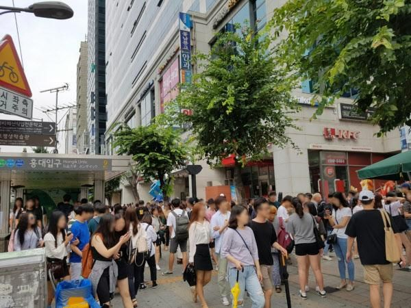
旅行的第一個下午，不適合安排太多事情。
這不是因為累，而是因為，一座城市需要一點時間，才能慢慢走進你的眼睛。
走出弘大入口站，陽光正好。不是中午刺眼的白，而是開始偏暖的金色。
地面還留著白天的熱氣。風從街口吹過來，帶著咖啡、奶油和一點點剛烤好的麵包香。
這些味道混在一起，後來，每次想起首爾，都會一起想起來。
第一次到弘大的人，總會忍不住一直往前走。每一條街都很熱鬧，每一家店都想進去看看。
服飾店播放著音樂，彩妝店門口站著招呼客人的店員，街角的甜點店剛把今天最後一批可頌放上架。
好像每一間店都在說：進來看看。可是如果每一家都走進去，最後反而什麼都記不得。
把腳步放慢。不要一直走主街，在第二個路口右轉，再走進第一條沒有名字的小巷。
聲音忽然變小了，人也少了一半。
咖啡館把窗戶全部打開。有人坐在木桌前畫畫，有人戴著耳機看書，有人一個人吃著剛出爐的司康。
這裡沒有誰急著離開，時間，好像也慢了一點。
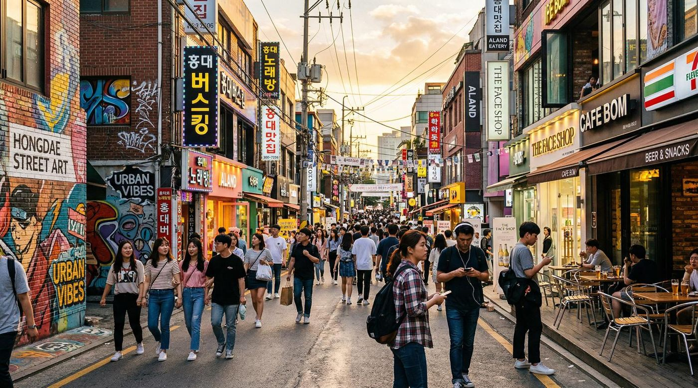
旅行有一種很奇妙的錯覺——總覺得一直走，就能得到更多。其實不是。
有時候，坐下來，才會看見真正的城市。
找一家喜歡的咖啡館，不用查評價，也不用看排行榜。只要走到門口，如果你願意推開那扇門，那就是今天最好的地方。
靠窗的位置還空著。點一杯冰美式，或者一杯拿鐵。不用急著拍照，也不用急著喝。
窗外開始有人背著吉他經過，有人推著音箱，有人在廣場邊壓腿、暖身。
弘大的夜晚還沒開始，可是你已經可以看見，它正在慢慢準備。
下午五點半，街頭開始聚集一些人。不是觀眾，是表演的人。
有人一遍又一遍試著同一句歌詞。
有人蹲在地上，把舞鞋的鞋帶重新綁緊。
有人拿著一面小鏡子，整理被風吹亂的瀏海。
沒有舞台，沒有主持人，沒有聚光燈，只有一群年輕人，希望今天有人願意停下來聽一首歌。
六點，第一首音樂響起。人群沒有立刻停下——有人繼續走，有人只是放慢腳步。
一個小女孩拉著爸爸的手，站在最前面。她不知道歌曲是誰唱的，卻跟著節奏輕輕點頭。
旁邊一位阿姨買完菜，沒有離開，提著購物袋，安靜聽完整首歌。
旅行的人，和生活的人，在同一條街上，短暫成了同一群人。
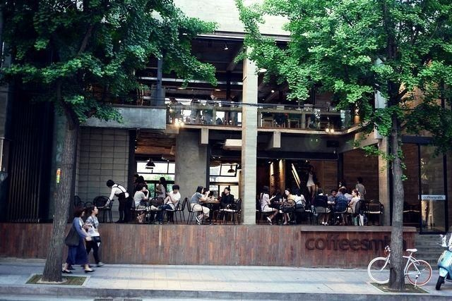
天慢慢暗了，招牌一盞一盞亮起來。
白天的弘大，像一座街區；晚上的弘大，更像一座劇場。
每一個街角，都有自己的故事。
有人唱歌。
有人跳舞。
有人戀愛。
有人剛下班。
也有人，像你一樣，第一次來到這裡。
如果今天有人問：去了哪些地方？答案其實很簡單——只有弘大。
可是沒有任何遺憾。因為今天認識的，不是一個景點，而是一座城市，如何開始一個夜晚。
翻過下一頁，夜色會越來越深。
而首爾，才正準備開始它真正的一天。
第六章第一杯咖啡，不是為了提神
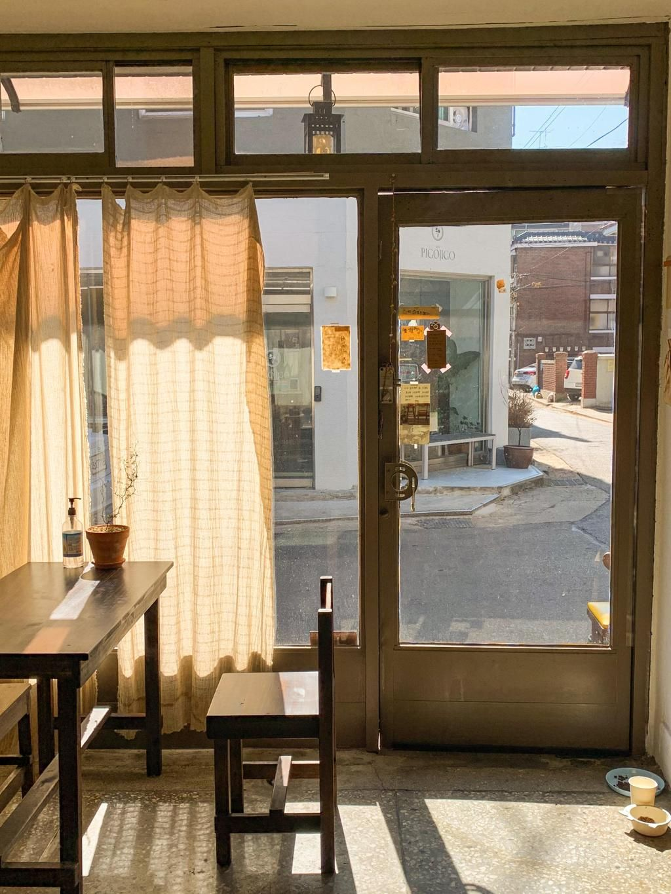
第二天早上，不用設鬧鐘。
旅行裡最舒服的早晨，通常不是被時間叫醒，而是被陽光。
七點四十分，窗簾沒有完全拉緊，一道光慢慢落在床邊。
街上的車聲很輕，偶爾有公車停靠，遠遠傳來垃圾車收運玻璃瓶的聲音。
樓下的咖啡館，比便利商店更早開門。磨豆機開始運轉——那是首爾早晨真正的鬧鐘。
很多人來韓國，第一件事是找早餐。其實，很多首爾人的一天，不是從早餐開始，而是從咖啡開始。
走進咖啡館，門推開的瞬間，冷氣迎面吹來，外面的夏天被留在玻璃門外。
店裡只有三個人：一位女孩對著筆電修改報告，一位中年男子讀著報紙，還有一位老太太，已經喝完半杯咖啡。
誰都沒有說話。音樂很輕，輕到幾乎只剩咖啡機蒸氣的聲音。
吧檯後面的咖啡師沒有急著招呼，只是抬起頭，微笑了一下。那種笑，不熱情，也不冷淡，更像是說：歡迎今天的早晨。
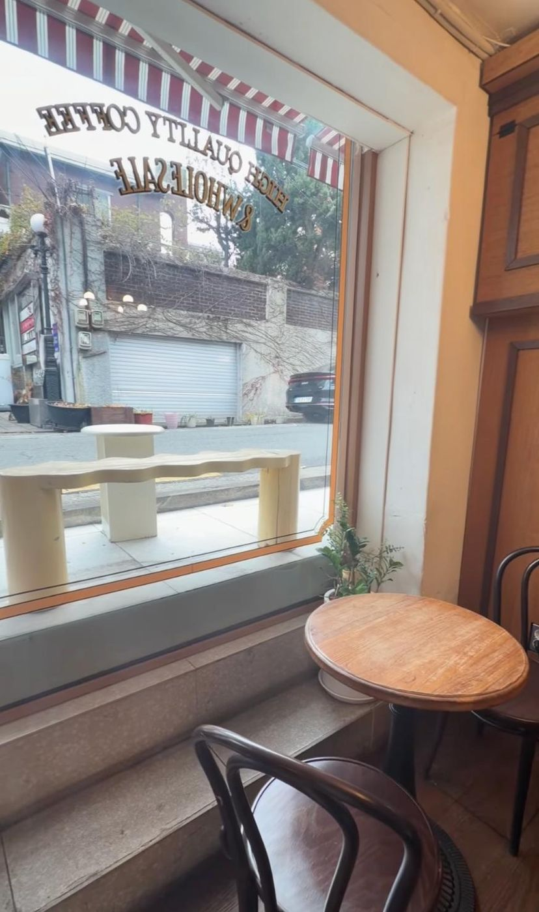
點了一杯冰美式。不是因為天氣熱，只是想和眼前的人一樣，試著用這座城市的方式，開始一天。
很多人以為，韓國人喜歡咖啡是因為流行。可是坐在這裡一個小時，你會慢慢發現：真正重要的，不是咖啡，而是停下來。
有人工作。
有人閱讀。
有人發呆。
有人什麼都沒做，只是安靜看著窗外。
沒有人催促時間，也沒有人一直滑手機。
在首爾，一杯咖啡，好像允許一個人，暫時不用扮演任何角色。
窗外開始熱鬧。學生騎著腳踏車經過，一位爸爸牽著孩子走向幼兒園，送貨的卡車停在巷口，麵包店把剛出爐的吐司放到展示架上。
昨天還陌生的街道，今天開始有了一點熟悉。你忽然發現，自己不是在觀光，而是在生活。
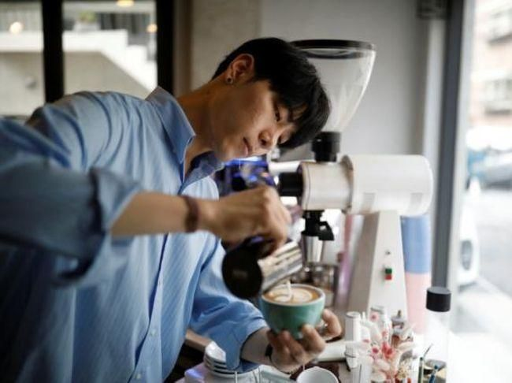
咖啡喝到一半，不用急著離開。
旅行有很多事情可以完成，可是有些時候，最值得完成的，只是把一杯咖啡慢慢喝完。
離開時，咖啡師輕輕點頭，你也點了點頭，沒有多說一句話。可是心裡知道：如果明天再來，他可能會記得你。
旅行真正開始的時候，不是認識很多地方，而是開始有地方，慢慢認識你。
走出店門，陽光比剛才更亮了，街上的人也更多了。
手上的咖啡還剩一半。沒有目的地，沒有下一個一定要去的地方，只是慢慢往前走。
首爾的早晨，就是這樣開始的。不是熱鬧，而是溫柔。
翻過下一頁，城市已經完全醒了。
而你，也準備好，不再只是旅行。
今天開始，用散步的速度，認識首爾。
第七章不要急著去景福宮
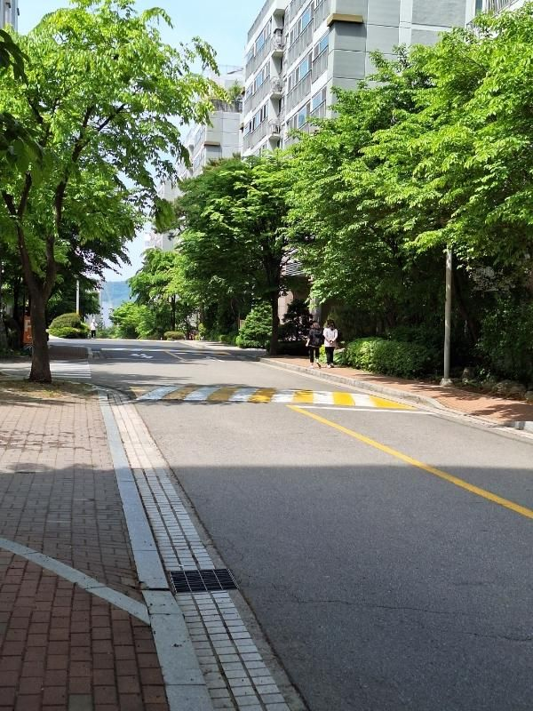
如果今天打開旅行清單，大概會看到很多名字。
景福宮、北村韓屋村、明洞、南山塔、廣藏市場——每一個地方，都有人說一定要去。
於是，第二天的行程很容易變成一場競賽。
八點出門，九點景福宮，十一點北村，下午明洞，晚上漢江。
一天結束，好像去了很多地方，可是真正記得的卻很少。
今天，不去景福宮。至少，不要現在去。
把早上的兩個小時，留給住宿附近，留給昨天來不及仔細看的街道。
早晨八點半，昨晚熱鬧的弘大，像換了一張臉。
街頭藝人的音箱收起來了，服飾店的鐵門還沒有全部打開。
路上的人不多，只有送貨的貨車，一輛接著一輛停在店門口。
咖啡館開始飄出烘豆的香味，花店老闆蹲在門口，把昨天枯掉的花剪掉。
沒有人拍照。因為這不是旅行的時間，這是生活的時間。
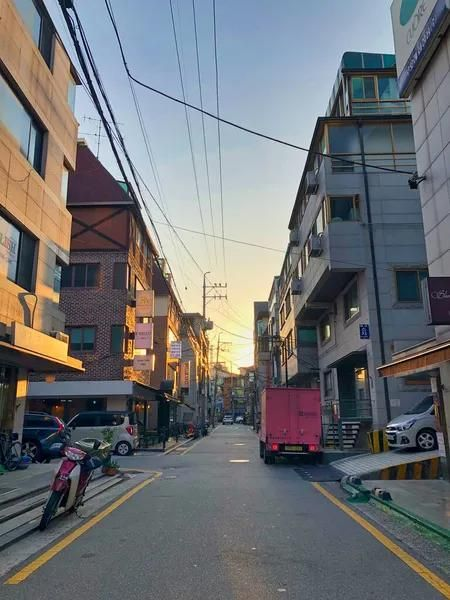
你慢慢走，沒有導航，只是沿著昨天回飯店的那條路。
忽然發現：原來昨晚一直排隊的小店，早上看起來這麼安靜；原來昨天沒注意到，二樓有一家小畫廊；原來轉角有一棵很大的銀杏樹。
旅行有趣的地方就在這裡——同一條街，白天和晚上，像兩個不同的人。
巷口有一家洗衣店，一位老先生把剛烘好的棉被抱出來，棉布在陽光下，看起來很柔軟。
隔壁早餐店，一位媽媽正在幫孩子整理制服。孩子嘴裡咬著吐司，背包還沒背好，媽媽一邊笑，一邊催他快一點。
你忽然想起：今天是星期二。對你來說是旅行，對他們來說，只是很普通的一天。
旅行最珍貴的，不是看見城市最精彩的一面，而是看見城市最平常的一面。
因為精彩可以安排，生活不能。
九點十分，一間麵包店剛出爐第一盤可頌。店裡只有兩位客人：一位年輕女生買了兩個可頌、一杯咖啡，另一位先生買了一條吐司。
沒有拍照，沒有停留，付完錢就離開了。
你站在門口，忽然也想買一個。不是因為網路推薦，只是因為，今天的奶油香味，真的很好聞。
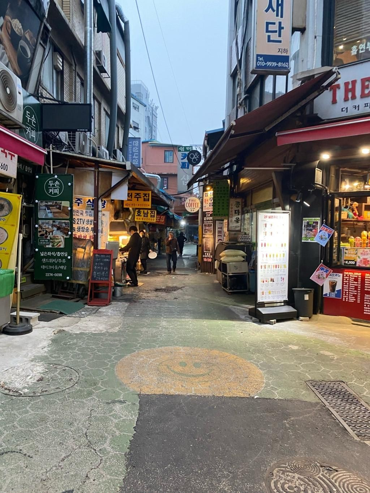
拿著還熱著的可頌，找一張公園長椅坐下。
遠方傳來學校下課鐘聲，幾隻麻雀跳到腳邊，又很快飛走，風把麵包紙吹得輕輕作響。
沒有景點，沒有行程，可是這個早晨，很完整。
很多年後，如果有人問你：「首爾最漂亮的地方是哪裡？」你可能不會立刻想到景福宮。
反而會想起那天早上，坐在公園長椅，吃著剛出爐的可頌，看著一座陌生城市，慢慢醒來。
翻過下一頁，現在，才準備前往景福宮。
不是因為它是首爾最有名的景點，而是因為你已經先認識了今天的首爾。
接下來，才輪到它的歷史。
第八章景福宮，請早一點來
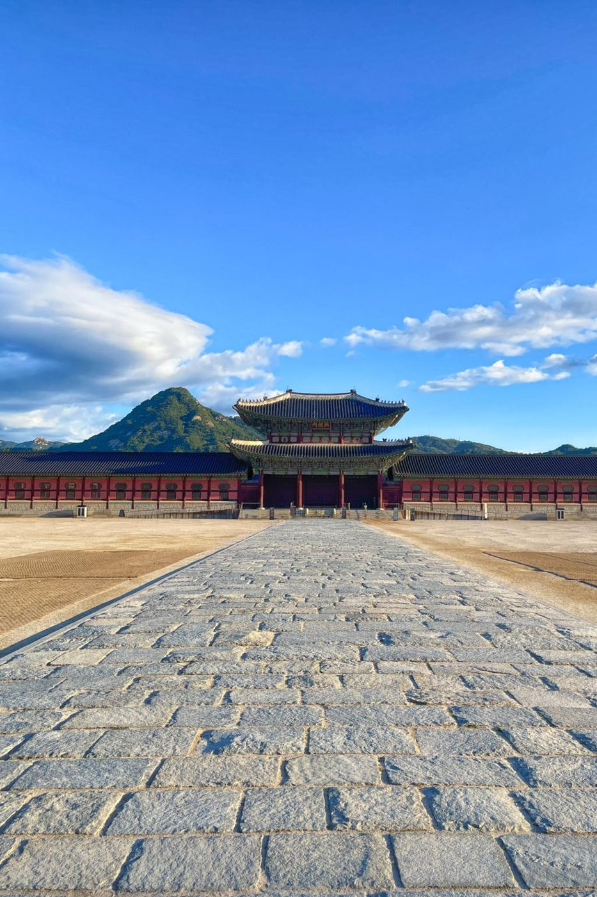
景福宮，不適合中午來。不是因為太熱，也不是因為光線不好，而是因為，人太多了。
真正的景福宮，在九點以前。
早晨八點四十分，宮門剛打開不久，遊客還沒有完全出現。
腳步聲落在石板地上，很清楚。風從宮牆另一側吹進來，吹動屋簷下的小銅鈴。
沒有音樂，沒有導覽聲，只有樹葉摩擦的聲音。
六百年的時間，好像也跟著安靜下來。
第一次站在勤政殿前，沒有想像中的震撼。它沒有巴黎宮殿那樣華麗，也沒有日本城堡那樣高聳，只是靜靜地站在那裡。
木頭、石頭、瓦片，一層一層堆疊起來，沒有刻意炫耀自己的歷史，卻讓人不自覺放低了聲音。
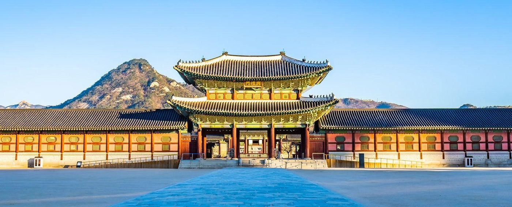
我一直很喜歡韓國古建築的一件事：它沒有急著和自然分開。
屋頂向天空延伸，院子留給陽光，樹木長在宮殿旁邊。
夏天有蟬，秋天有銀杏，冬天有雪，春天有新葉。
四季一直走進來，歷史也一直留在這裡。
有一位老人，拿著相機，很慢很慢地走。他沒有一直拍，只是站著，看了一會兒，才按下一次快門。
後來才發現：真正懂得拍照的人，通常都花更多時間看，而不是按。
旅行也是。看，比收藏更重要。
穿韓服的人開始多了起來。女孩們提著裙襬，小心走過石階；有人替朋友整理髮飾，有人笑著回頭，有人站在屋簷下，等另一半拍照。
她們讓這座宮殿，看起來不像博物館，反而更像一個還有人生活的地方。
衣服是新的，建築是舊的，兩種時間，在同一個畫面裡相遇。
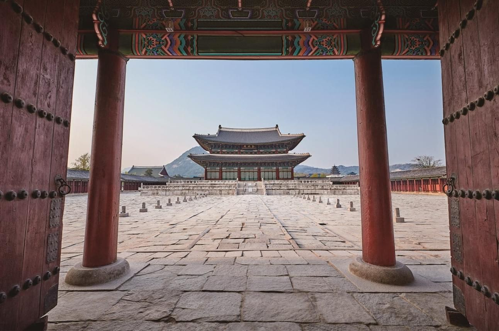
走到慶會樓，水面很安靜，柱子的倒影，一根一根落進池裡。風經過時，倒影才慢慢散開。
有人坐在樹下休息，有人什麼都沒有做，只是一直看著水。
沒有任何人催促你往前，所以，你也不用急。
旅行常常會誤以為，一個景點只需要十五分鐘——拍照、打卡、離開。
可是景福宮真正值得留下的，不是照片，而是時間。
找一個角落坐下，十分鐘，二十分鐘，看著光影慢慢移動。
你會開始發現：宮殿不是建築，它更像一座很大的院子，只是院子的主人，已經離開很久了。
十點過後，旅行團開始進來。導遊舉起旗子，快門聲慢慢變多，剛剛的安靜，一點一點消失。
你忽然慶幸，自己早了一個小時。不是因為拍到比較乾淨的照片，而是因為，你見過了景福宮真正醒來的樣子。
離開宮門之前，回頭看了一眼。陽光落在屋簷，燕子從天空飛過。
門還是那一道門，牆還是那一道牆，真正改變的，只是站在門前的人。
來的時候，你是遊客；離開的時候，你開始知道：有些地方，不是看過就算來過，而是安靜待過，才算認識。
翻過下一頁，走出宮門，不要急著搭車。
隔著一條馬路，有一片比景福宮更慢的地方——一座住了六百年的村子。
它叫做，北村。
第九章北村，不要說話太大聲
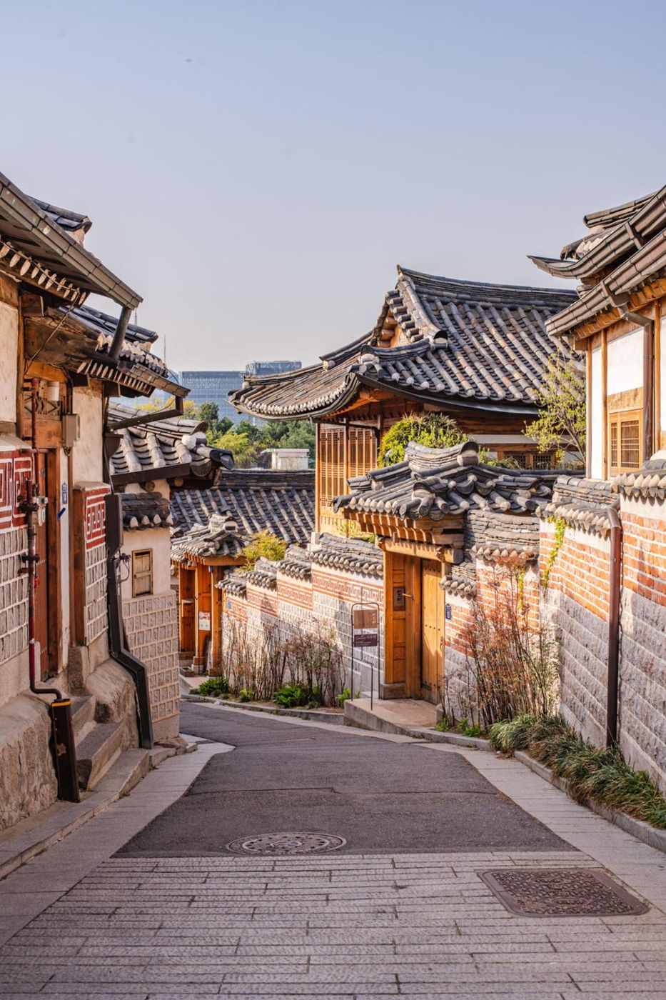
離開景福宮，不要急著搭公車，也不要立刻打開導航。
只要沿著宮牆慢慢往東走，十分鐘左右，柏油路會變窄，樓房開始變矮，腳步，也會不知不覺慢下來。
很多人以為，北村是一個景點。其實不是，它一直都是一個社區。
有人在這裡出生。
有人在這裡長大。
有人每天早上七點出門上班。
也有人每天傍晚，把曬了一天的衣服收進屋裡。
旅行的人經過，生活的人，沒有停下。
巷子很安靜。不是因為沒有人，而是大家都刻意放輕了聲音。
轉角立著一塊小小的牌子，上面寫著：請安靜。
第一次看到時，有一點意外。後來才知道，那些韓屋裡，真的有人住。
窗戶後面，也許有人正在開會，有人正在陪孩子寫功課，有人剛下夜班，準備補眠。
旅行，不應該打擾別人的日常。
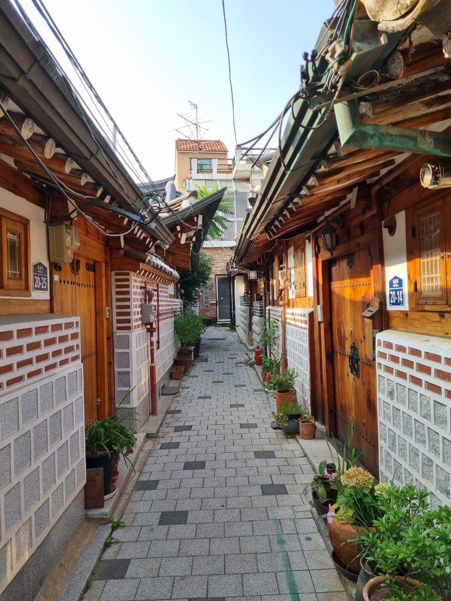
屋瓦一層一層向山坡延伸。灰黑色的屋頂，和遠方的現代大樓，同時出現在視線裡。
六百年前，和今天，站在同一個畫面。沒有誰取代誰，只是一起存在。
這大概就是首爾很特別的地方——它沒有把歷史收藏起來，而是讓歷史繼續生活。
走進一條更小的巷子。牆邊放著一雙雨鞋，門口有一把折起來的雨傘，一盆繡球花剛開。
陽光照在木門上，木頭因為時間，變成溫柔的深褐色。
沒有任何說明牌，沒有任何故事介紹。可是你知道，這裡每天都有人推開這扇門，每天都有人回家。
旅行時，很容易一直找「最佳拍照點」。可是北村最好的照片，通常不是站在最高的地方，而是在某一條沒有人的小巷。
沒有擺拍，沒有刻意等待，只是剛好——有風吹過，有光落下，有一隻貓從牆角慢慢走過去。
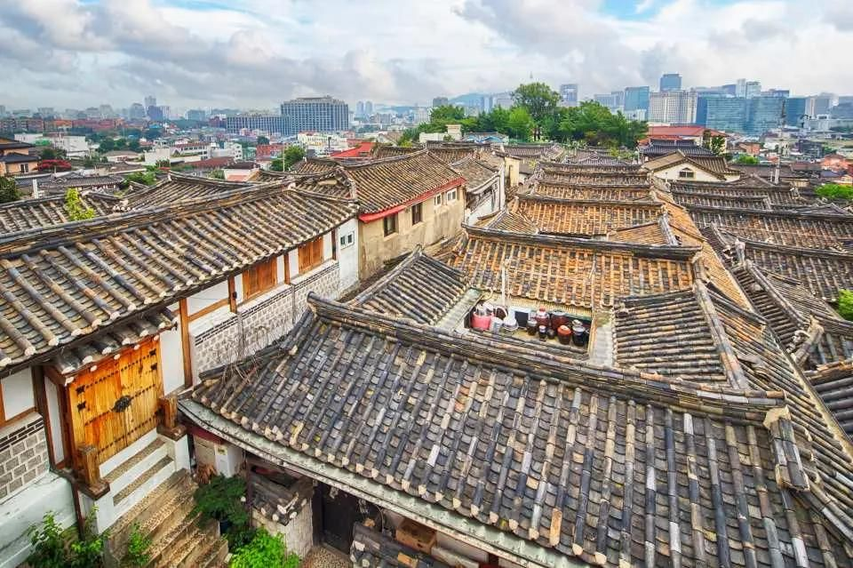
十一點，陽光開始變得明亮，旅行團慢慢變多。有人舉著自拍棒，有人急著找下一個角度。
你忽然想起剛剛在景福宮的安靜，也想起今天一路走來，沒有趕，沒有追，只是慢慢地，認識這座城市。
走累了，不要急著找咖啡館，先找一張石階坐下。北村有很多坡，坐著，比站著更容易看見它。
一位老奶奶提著菜籃慢慢走上坡，一位送貨員騎著小機車，熟練地轉過狹窄的巷口，一隻白色的小狗，趴在門前睡午覺。
沒有一件事情特別，可是全部加起來，就是北村。
離開之前，回頭看一眼。不是看韓屋，而是看那條剛剛走過的巷子。
旅行真正留下來的，通常不是目的地，而是路。
翻過下一頁，中午到了，首爾開始飄出午餐的香味。
今天，不去排隊名店，去一間只有附近上班族會走進去的小餐館。
因為一座城市真正的味道，很少藏在排行榜第一名。
第十章中午十二點半，跟著上班族吃飯
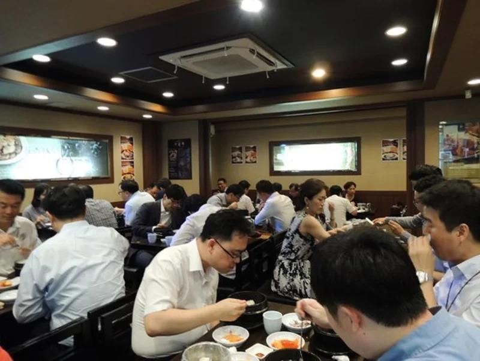
到了中午，首爾的速度，會突然變快。不是因為觀光客，而是因為午休到了。
十二點二十分，原本安靜的巷子，開始出現人潮。辦公大樓的電梯，一層一層吐出人群。
大家沒有慢慢走，像是心裡早就決定好今天要吃什麼。
有人往湯飯店走，有人走進烤肉店，有人直接進了地下室的小餐館。
沒有猶豫，也沒有拿手機搜尋評價。這是每天都重複的路。
旅行的時候，很多人喜歡找「必吃」。可是住進一座城市之後，你會開始對另一種餐廳感興趣——那些門口沒有排隊，沒有中文菜單，沒有拍照打卡牆，只有附近居民，一到中午就自然走進去。
站在街角，不用急著決定，看哪一家店人最多。不是觀光客，是穿襯衫、背公事包、戴識別證的人。跟著他們走，通常，不會錯。
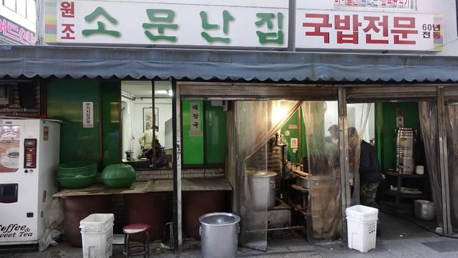
門推開，店裡已經坐了八成滿。老闆抬頭看了一眼，沒有問你從哪裡來，只是伸出一根手指，意思是：一位嗎？
你點點頭，他指向窗邊最後一個空位。整個過程不到十秒，好像你本來就是這裡的客人。
桌上早就放好筷子、不鏽鋼湯匙、一壺冰水，還有一個小小的呼叫鈴。
旁邊的人沒有聊天，吃得很專心。有人十分鐘就吃完，有人一邊吃，一邊看著手機上的新聞。
沒有人拍照。因為對他們來說，這不是旅行，只是午餐。
點了一碗豬肉湯飯，熱氣慢慢升起，乳白色的湯，看起來很平靜。
喝第一口之前，先什麼都不要加。不要放鹽，不要放蝦醬，不要放辣椒。先喝原來的味道，然後再一點一點調整。
每一家店，都有自己的比例；每一位客人，也都有自己的習慣。沒有標準答案。
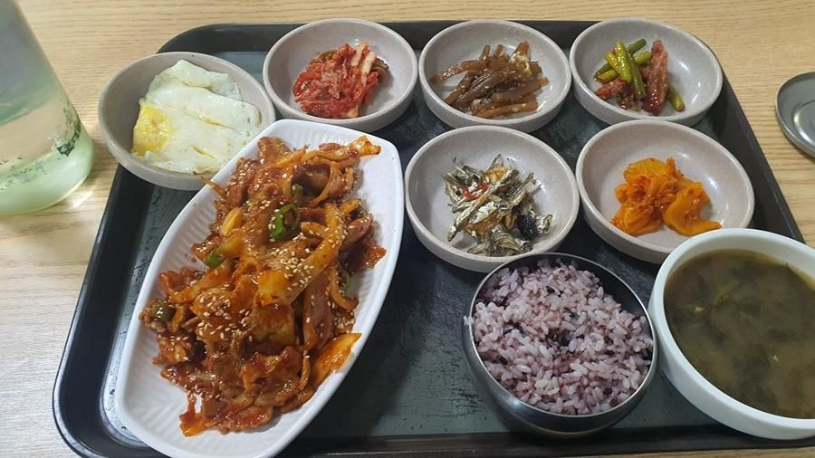
隔壁桌的大叔，放了一匙蝦醬，再加很多蔥，最後放一點胡椒；對面的大學生，只放辣椒粉；旁邊的阿姨，什麼都沒加。
同一碗湯，每個人，都喝出自己的樣子。
旅行也是。同一座首爾，每個人最後帶回家的，都不一樣。
吃到一半，老闆默默走過來，替你把泡菜補滿。沒有問，也沒有收費，只是很自然地放下，然後又走回廚房。
這些小動作，沒有寫在任何旅遊網站，可是它們，就是一座城市的溫度。
十二點五十五分，第一批客人開始起身。有人把椅子推回去，有人對老闆點點頭，推開門，又回到下午的工作裡。
餐廳一下子空了一半。五分鐘後，第二批客人又進來。每天都是這樣，今天，只是剛好多了一位旅行的人。
走出餐廳，陽光有點刺眼，街上的人，又恢復了上午的節奏。剛剛熱鬧的餐廳，很快就安靜下來，好像什麼都沒有發生。
可是你知道，今天吃的，不只是一頓午餐，而是首爾最普通的一個中午。
翻過下一頁，吃飽以後，不要急著去百貨公司。
下午一點半的首爾，有一種很舒服的安靜。
適合散步，適合迷路，也適合，遇見一間原本沒有計畫走進去的咖啡館。
第十一章下午一點四十七分，迷路一次也很好
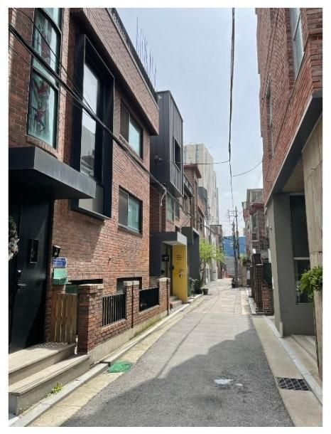
吃飽以後，不要急著打開地圖，也不要急著搜尋下一個景點。把手機收進口袋。今天下午，讓城市帶路。
旅行裡，迷路是一件很奇怪的事情。在自己的城市，迷路會讓人著急；在陌生的城市，迷路反而像一份禮物。
因為只有不知道下一個轉角是什麼，才有可能遇見原本不存在於計畫裡的風景。
午後的陽光，落在巷子裡。沒有早上那麼溫柔，卻也還沒有傍晚的金黃色。光從建築之間斜斜灑下，把一半的路照亮，另一半留在陰影裡。
風吹過來，帶著剛洗好的衣服味道，也帶著不知道哪一家咖啡館飄出的咖啡香。
前方是一間沒有英文招牌的小店。玻璃窗很乾淨，裡面放著幾張木椅，幾本設計雜誌，一盞舊檯燈。
沒有排隊，沒有拍照的人。如果不是剛好走到這裡，大概永遠不會知道它存在。
旅行久了，慢慢會開始相信一件事：真正喜歡的地方，通常不是別人推薦的，而是自己找到的。因為它沒有別人的記憶，只有自己的。
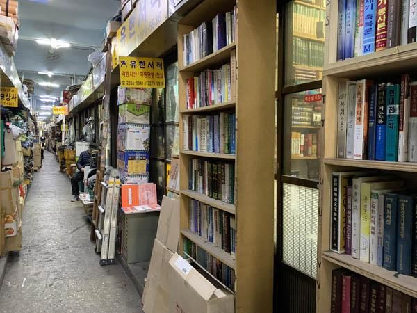
再往前走，巷子忽然變得更安靜。一位老人坐在門口修理木椅，動作很慢，每一次磨砂紙，都很仔細。
沒有人圍觀，也沒有人停下來。這只是今天下午，他要完成的一件工作。
你站在對街看了一會兒，忽然覺得：旅行其實很像閱讀。有些頁面，沒有劇情，卻不能跳過。
一隻橘貓從圍牆上跳下來，看了你一眼，又慢慢走進另一條巷子。沒有任何目的，也沒有任何急迫。
你好像不自覺跟著牠走了幾步，最後，牠消失在一扇木門後面。你笑了一下，然後繼續往前。
有時候，一個下午，不需要完成任何事情。不需要買東西，不需要拍很多照片，甚至不需要知道自己在哪裡。
只要一直走，一直看，一直感受，城市就會慢慢把自己打開。
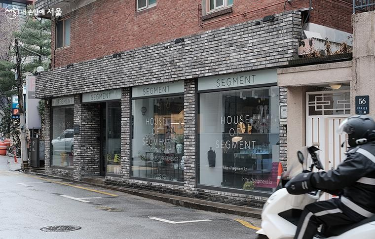
走到一間文具店，門口擺著一排明信片，畫的是首爾四季——春天的櫻花，夏天的漢江，秋天的銀杏，冬天的白雪。
你拿起其中一張。不是因為畫得最好，只是因為，它讓你想起今天的風。
很多年後，你可能不記得這家店叫什麼名字，也不記得它在哪一條巷子。可是你會記得那天下午，沒有導航，沒有目的地，只有一雙腳，和一座願意慢慢介紹自己的城市。
下午三點，太陽開始往西邊移動，街上的影子變長了。咖啡館裡的人比剛才更多，有人開始工作，有人開始聊天。
城市又準備進入另一個節奏，而你的下午，也準備翻到下一頁。
翻過下一頁，下午三點半，找一家咖啡館。
今天不是為了休息，而是為了學會首爾人最擅長的一件事——把時間，過得慢一點。
第十二章下午三點二十一分，一杯咖啡和一個下午
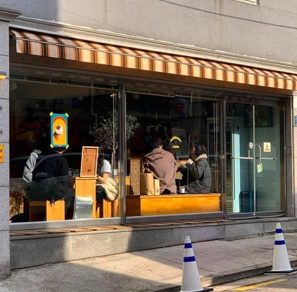
如果要替首爾選一種顏色，我想，不是櫻花的粉，不是銀杏的黃，也不是夜晚霓虹的藍，而是咖啡的顏色。深一點，慢一點，也安靜一點。
下午三點，很多城市還在工作，首爾也是。可是總有人，願意替自己留一杯咖啡的時間。
有人剛開完會，有人剛下課，有人只是散步累了。推開門，點一杯熟悉的飲料，坐下，下午，好像就開始了。
第一次走進首爾的咖啡館，很容易先注意到安靜。不是沒有人，而是每一個人，都知道怎麼和別人共享同一個空間。
有人戴著耳機剪影片，有人翻著一本快要看完的小說，有人望著窗外，一動也不動。
如果不是桌上的咖啡慢慢變少，你甚至會以為，時間停住了。
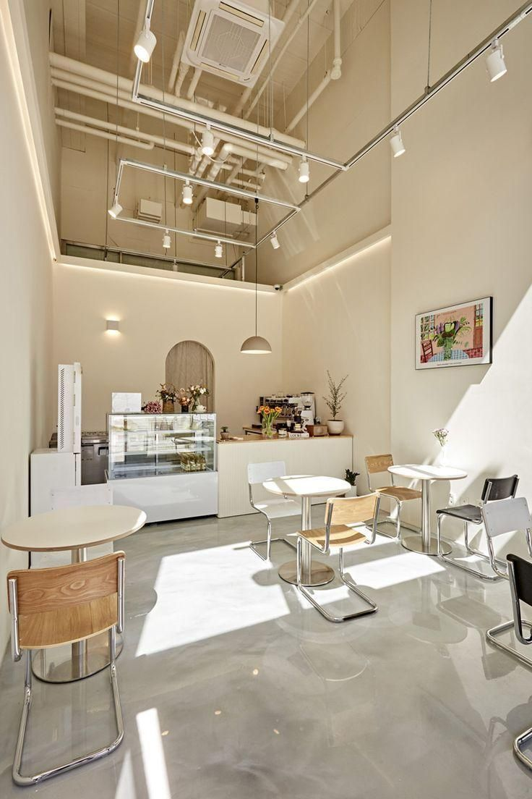
靠窗的位置，總是最快坐滿。不是因為比較適合拍照，而是因為，可以看見街道。
一位媽媽牽著孩子經過，送貨員停下機車，把一箱牛奶搬進隔壁餐廳，一對情侶站在斑馬線前，低聲討論晚餐吃什麼。
窗戶像一個畫框，把首爾一天最普通的畫面，一格一格裝進來。
咖啡送上來時，先不要急著喝。摸摸杯子，感受一下溫度。有時候旅行太忙，忙到忘記，一杯飲料也有自己的節奏。
冰塊會慢慢融化，奶泡會慢慢消失，香氣會慢慢變淡。每一件事情，都有自己的時間。旅行也是。
我開始注意到一件事：首爾人很少一直看手機，至少，在咖啡館裡不是。有人真的在工作，有人真的在閱讀，也有人只是發呆。
發呆，好像不是浪費時間，而是一種休息，一種把腦袋重新整理好的方法。
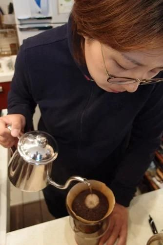
桌上的咖啡喝了一半，忽然想起昨天。昨天的這個時間，還在景福宮；前天，剛走出弘大地鐵站。
時間沒有變快，只是旅行開始有了層次。第一天，你認識首爾；第二天，首爾開始認識你。
坐了快一個小時，沒有人過來收杯子，也沒有人暗示你該離開。窗外的人換了一批，陽光也往另一邊移動，可是店裡依然很安靜。
在首爾，一間咖啡館，不只是做生意，它更像一個城市共同的客廳。每個人都可以來，每個人也都可以待一會兒。
離開時，門上的風鈴輕輕響了一聲，咖啡師正在替下一位客人磨豆。你沒有回頭，可是知道：如果明天再來，這裡還會是同樣的樣子。
旅行裡最讓人安心的，不是每天都有新的驚喜，而是開始有幾個熟悉的地方，在等你回去。
翻過下一頁，下午的陽光開始變得柔和，首爾，也準備迎接一天裡最迷人的時刻。
不是夜晚，而是黃昏。
當街燈還沒亮起，天空還留著一點藍色時，整座城市會慢慢放慢腳步。
而你，也會開始明白，為什麼有些人，一次又一次回到首爾。
第十三章下午六點十二分，黃昏是首爾最誠實的時候
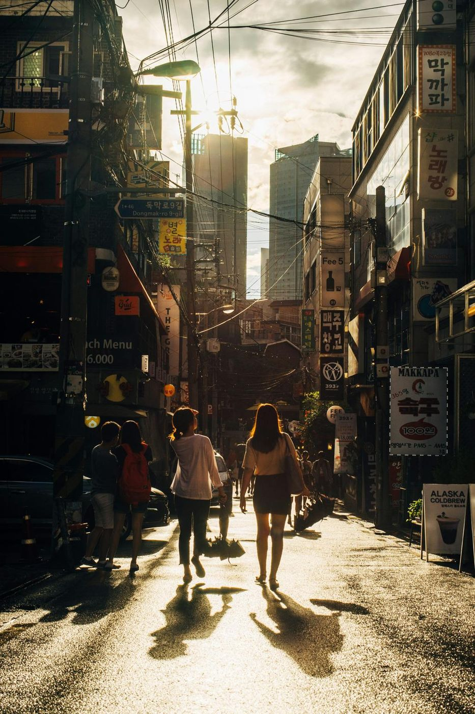
我一直覺得，一座城市真正的模樣，不是在白天，也不是深夜，而是在黃昏。
白天屬於工作，夜晚屬於娛樂，只有黃昏，誰也不屬於。它只是一天慢慢結束的樣子。
六點十二分，太陽還沒有完全下山。天空是很淡很淡的藍，西邊開始出現一點橘色。
路上的人，比下午多了，可是沒有晚上那麼擁擠。一切都剛剛好。
辦公大樓的大門打開，第一批下班的人走出來。有人把領帶鬆開，有人把西裝外套掛在手臂上，有人一邊走，一邊回覆最後一封工作訊息。
走出公司之後，他們的腳步，明顯慢了一點，像是終於把今天放下了。
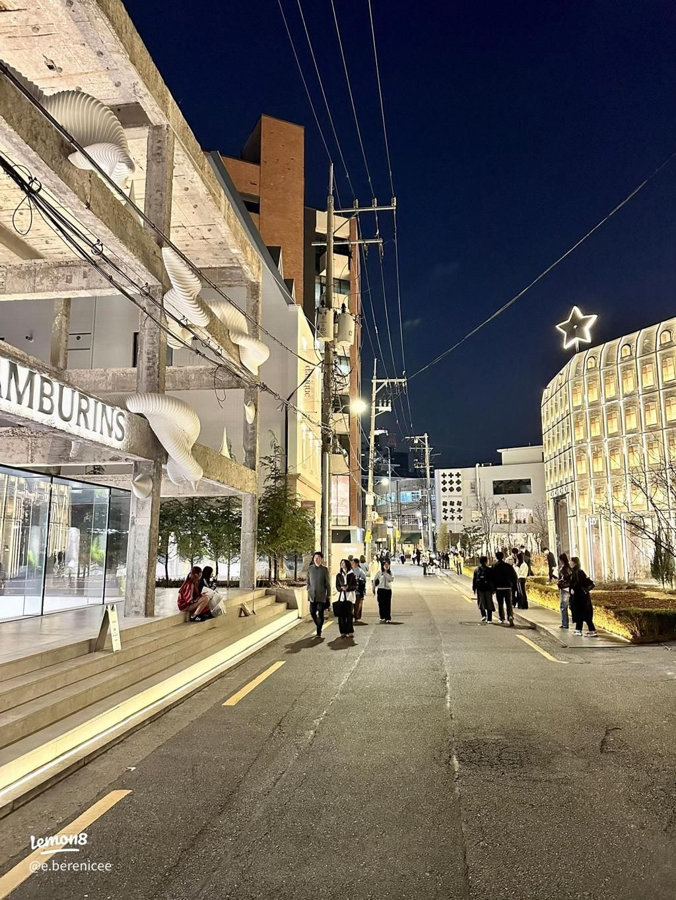
隔壁咖啡館開始忙碌。不是因為有人來工作，而是有人約見面。
兩個朋友，三個同事，一對情侶，推開門，笑著說一句：「等很久了嗎？」然後，一個晚上，就開始了。
首爾很少把浪漫放在建築，它把浪漫放在人與人的相遇。
一位爸爸騎著腳踏車，後座坐著一個小女孩，女孩手裡拿著一支冰淇淋，吃得很慢。經過你身邊時，她回頭看了一眼，又笑著轉回去；爸爸沒有回頭，只是繼續往前騎。
這一幕，大概只持續了五秒。可是很多年後，你可能還記得。
旅行有一件很奇妙的事情：你會開始記住一些和自己完全沒有關係的人。
那位在便利商店門口喝咖啡的大叔，那位每天經過花店的老太太，那位一直坐在窗邊讀書的女孩。
他們不知道你的名字，你也不知道他們的故事。可是，他們一起組成了你的首爾。
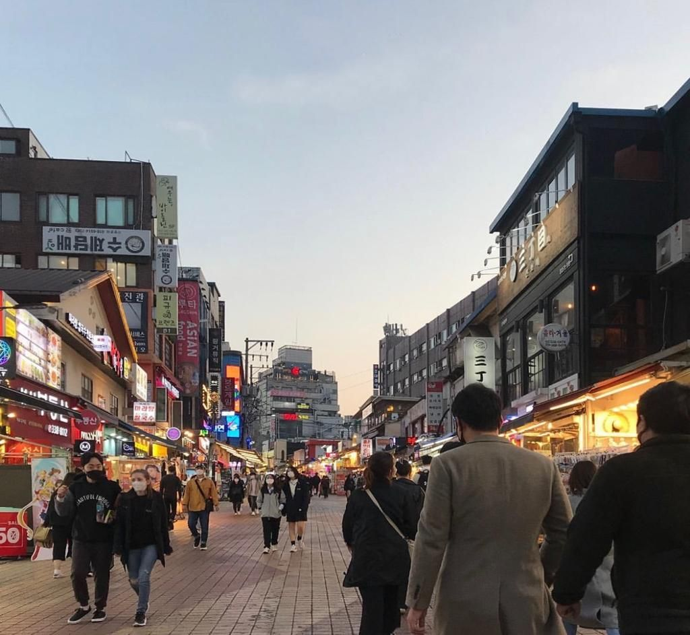
天空開始變暗，街燈一盞一盞亮起來，招牌慢慢發光，玻璃窗開始映出另一個城市。
白天結束了，夜晚還沒有開始。首爾最美的時間，就在這短短二十分鐘。
很多旅人都急著追夜景，急著找燈光最亮的地方。其實，黃昏不需要目的地，只需要一條願意慢慢走的路。
沿著街道一直走，不要刻意找風景。抬頭看看天空，低頭看看影子。今天的風，比昨天涼一點，空氣裡開始有晚餐的味道。
烤肉、炸雞、熱湯，一家一家餐廳，把門打開。一座城市，準備吃晚餐了。
我很喜歡旅行裡的黃昏。因為它不像早晨充滿期待，也不像夜晚充滿熱鬧，它比較像一個停頓，讓你有時間回頭想想：今天看見了什麼，今天記住了什麼，今天有沒有哪一個瞬間，值得很多年後再想起。
如果今天沒有完成所有行程，沒有關係；如果今天只是一直散步，也很好。
因為旅行從來不是完成了一張清單，而是累積了一些以後想起來會微笑的片段。
翻過下一頁，夜色降臨。今天，不去找首爾最熱鬧的地方，去一間沒有觀光客排隊的小餐館。
坐下來，點一碗熱湯。因為真正的一天，總要用一頓晚餐，好好收尾。
第十四章晚上七點二十八分，一頓沒有查過的晚餐
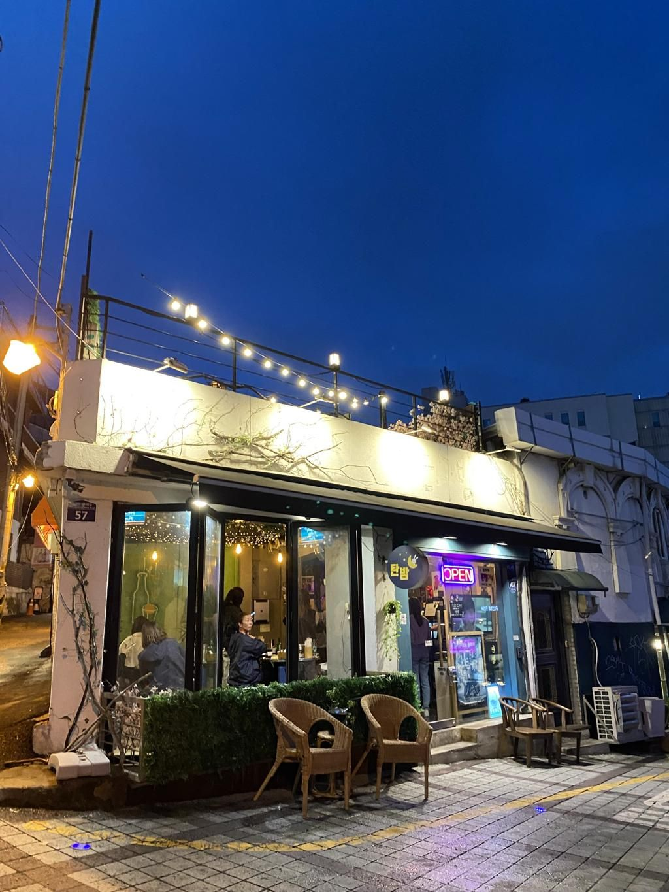
旅行第一天，總會忍不住一直搜尋：「首爾必吃」「韓國第一名」「一定要排隊」。
手機裡存了很多店，多到好像不吃，就白來了一趟。
可是第三天開始，你忽然不想找了。不是因為吃膩，而是因為開始相信：真正好吃的東西，不一定寫在排行榜上。
晚上七點，街道最熱鬧的時候，餐廳門口開始有人排隊。有些店，排了三十幾個人；有些店，門口一個人也沒有。
旅行的人，總是往隊伍最長的地方走；生活的人，卻走進巷子。今天，也走進巷子。
餐廳很小，大概只有十二張桌子。木頭桌面，被歲月磨得發亮，牆上掛著早已褪色的菜單。
老闆娘站在廚房門口，一邊盛湯，一邊和熟客聊天。她沒有刻意招呼，只是笑著點了一下頭，然後指向一張剛整理好的桌子，像是在說：坐吧。
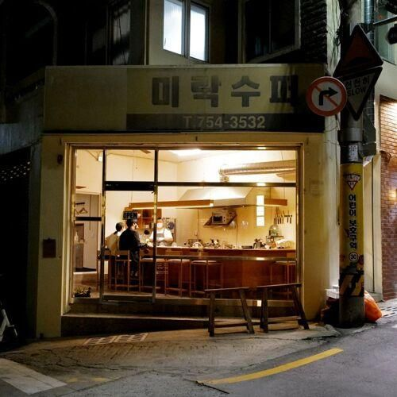
店裡沒有很多觀光客。隔壁桌是一家四口：爸爸正在把肉剪成小塊，媽媽把泡菜放進孩子碗裡，孩子一直盯著電視，螢幕正在播棒球。
另一邊，兩位老人喝著熱湯，一句一句慢慢聊天。沒有誰急著吃完，也沒有誰一直看手機。
點了一份豬肉湯飯，還有一盤煎豆腐，不用拍照。
熱湯送上來的時候，先聞一聞。白色的蒸氣慢慢升起，有豬骨熬了很久的香味，也有一點蔥花的甜。
第一口，沒有驚艷，只是很舒服，舒服到讓人想一直喝下去。
旅行久了，開始喜歡這種味道。它不是「最好吃」，而是很耐吃——像每天都可以吃，每天都不會膩。
這種料理，通常也是一座城市最真實的料理。因為它不是做給旅行的人，而是做給每天都會回來的人。
吃到一半，老闆娘端來一盤泡菜，沒有說什麼，只是放下，又走回廚房。你抬起頭，笑著說了一句：「謝謝。」她沒有回答，只是也笑了一下。
有些交流，不需要同一種語言。
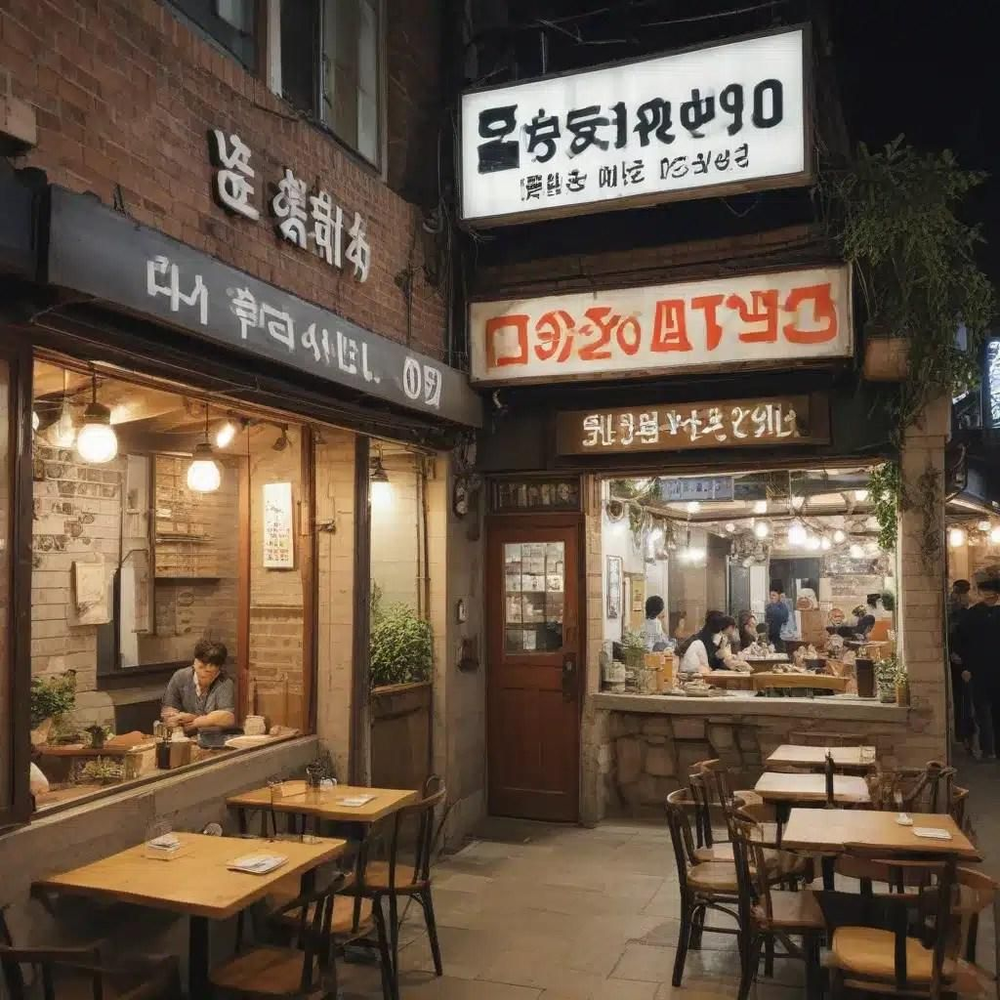
窗外開始下起小雨，有人跑進餐廳躲雨，外套還滴著水。老闆拿出一條毛巾，放在門口，大家很自然地讓了一點位置。沒有人抱怨，也沒有人催促，餐廳忽然變得更溫暖了。
一頓飯結束，走到櫃檯，老闆娘把找零放到你手上，輕輕說了一句：「감사합니다。」你也回答：「감사합니다。」
發音可能不夠標準，可是她聽懂了，微笑，比剛剛更深了一點。
推開門，雨停了。柏油路還濕著，招牌倒映在水窪裡，街上的人，比剛才少了一些。風有一點涼，肚子很飽，心也很安靜。
旅行最舒服的時候，大概就是現在：沒有趕下一個景點，沒有想著還要完成什麼，只是吃完一頓晚餐，慢慢走回住宿。
走到便利商店，沒有特別想買東西，還是走了進去。拿了一瓶香蕉牛奶，又放回去，最後買了一瓶玉米鬚茶。
不知道為什麼，好像旅行到了第三天，開始知道自己真正喜歡什麼。
翻過下一頁，夜晚還沒有結束。
首爾真正迷人的，不是熱鬧，而是吃飽以後，那段沒有目的地的散步。
第十五章晚上九點零五分，回家的路不一定要最快
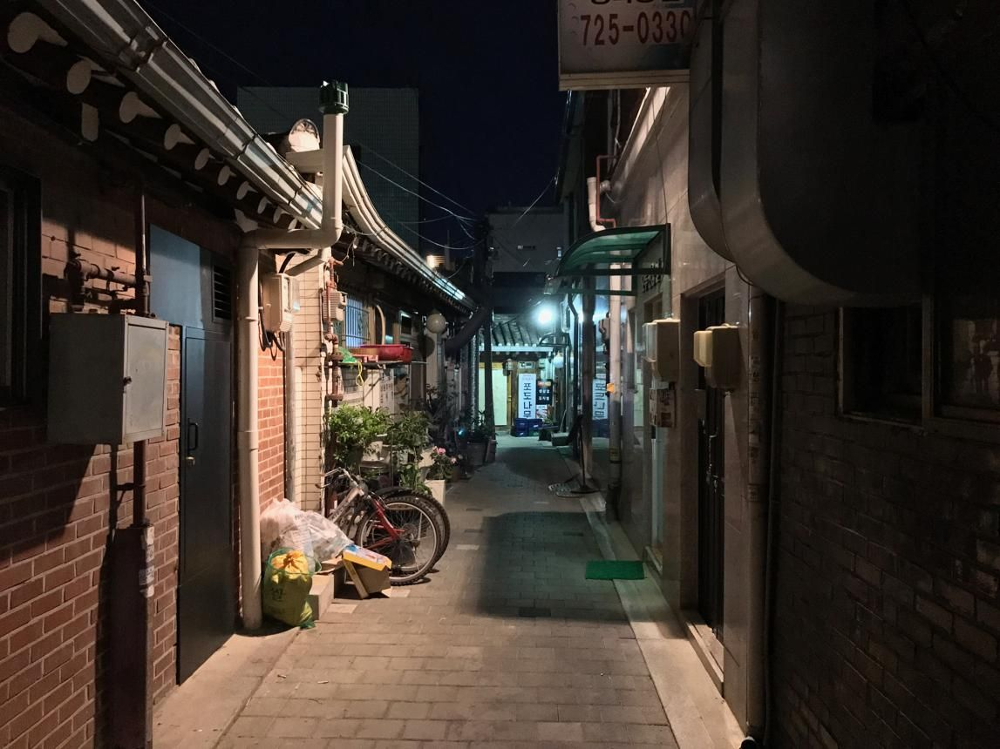
吃完晚餐，時間還很早。回飯店，也太早；再去一個景點，又太晚。
旅行裡總有這樣的一段時間，介於今天和明天之間，沒有安排，也沒有目的。
我開始喜歡這段路，因為它不用趕。
離開餐廳，空氣比剛才涼了一點，白天的熱氣慢慢散去。街上的人開始變少，有些店準備打烊，有些店，才剛亮起招牌。
首爾的夜晚，不是一瞬間開始的。它是一盞燈、一盞燈慢慢亮起來。
今天，不搭地鐵，也不叫車，只是走路，從餐廳走回住宿。二十分鐘，或者半個小時，都沒有關係。
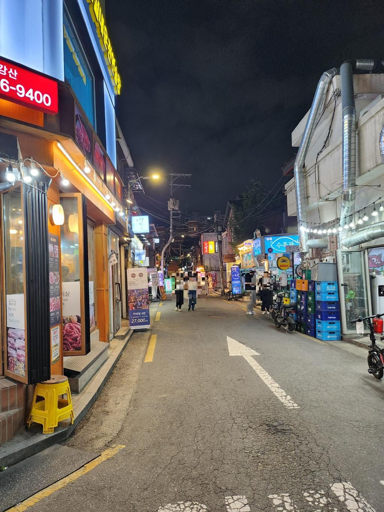
一間花店正在收攤，老闆把最後一盆植物搬進店裡，一片一片，把鐵門拉下。
隔壁洗衣店的烘衣機還在轉，透過玻璃，可以看見一件白襯衫慢慢翻滾。
街角的麵包店，燈已經熄了，可是櫥窗裡，還留著幾個沒有賣完的可頌。它們會等到明天嗎？大概不會。
旅行也是。有些事情，不需要全部完成。
走過一棟住宅，二樓的窗戶亮著，有人正在吃晚餐，電視裡傳來綜藝節目的笑聲；三樓有人澆花，四樓陽台晾著一條藍色毛巾。
你忽然停下腳步。不是因為風景，而是因為，眼前這一切，都和自己的生活很像。
不同的語言，不同的國家，可是每天晚上，大家都只是回家。
旅行會讓人產生一種錯覺，以為遠方的人，過著完全不同的人生。其實沒有——有人下班，有人煮飯，有人洗衣服，有人陪孩子寫功課。
城市和城市之間，最大的差別，不是生活，而是生活發生的背景。
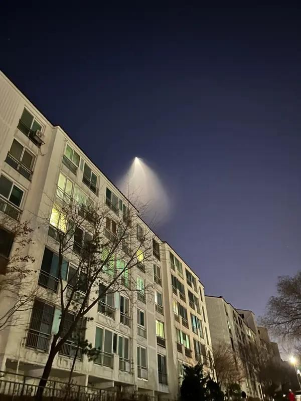
走到十字路口，紅燈亮起。身邊站著幾位陌生人：一位學生背著書包，一位外送員低頭看著手機，一對情侶分享一副耳機。沒有人說話。
綠燈亮了，大家一起往前，然後，又往不同的方向散開。
人生其實也是這樣：有些人陪你走一小段，然後，各自回家。
今晚沒有買紀念品，也沒有拍很多照片，手機裡只有幾張很普通的街景——一盞路燈，一間咖啡館，一個路口。
如果放到社群網站，大概不會得到很多讚。可是很多年後，真正讓你停下來看的，很可能就是這些照片。
因為它們沒有刻意證明旅行很精彩，它們只是誠實地記錄了一個晚上。
住宿的大門就在前面。昨天回來時，還要一直看導航；今天，不用了，腳自己知道怎麼走。
旅行真正熟悉一座城市的瞬間，往往不是找到新的地方，而是不用思考，也知道回家的路。
刷卡，電梯門慢慢關上。鏡子裡的人，看起來有一點累：鞋子沾了一點灰，衣服有淡淡的烤肉味，口袋裡還放著今天搭地鐵剩下的車票收據。
沒有任何一樣東西值得收藏，可是全部加起來，就是今天。
睡前，沒有立刻關燈，把窗簾拉開一點。遠方還看得見幾盞亮著的窗——有人比你晚下班，有人比你晚睡。
首爾沒有因為夜深而停止，它只是把聲音放小了一點。
你躺在床上，忽然想到：今天沒有完成很多行程，卻好像，比昨天更認識這座城市。
翻過下一頁，明天，不要去任何熱門景點。
我們去一個首爾人，真正會過週末的地方。不是為了打卡，只是為了，把自己放進這座城市的日常。
第十六章星期六上午，原來首爾人也會放慢
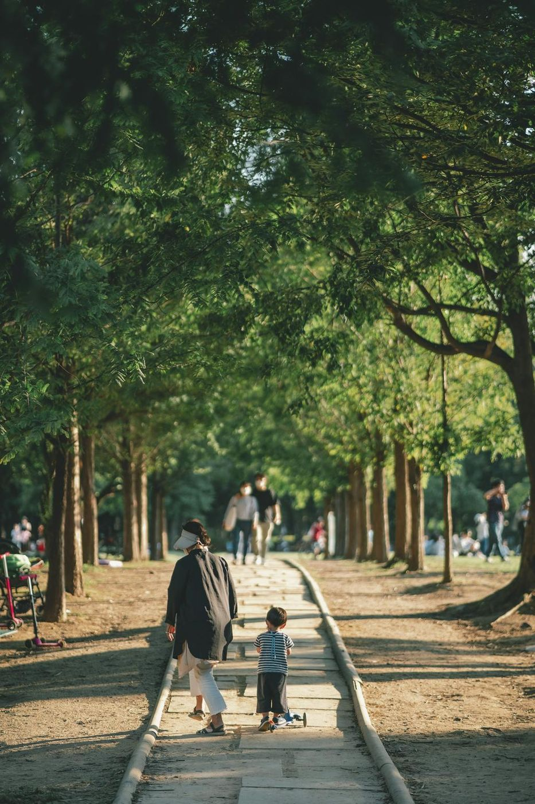
如果平日的首爾，是努力工作的城市，那麼週末的首爾，比較像終於回到自己的樣子。
星期六早上，沒有趕著打卡上班的人，沒有穿著西裝快步走向地鐵的人。咖啡館依然開著，只是今天，多了一點笑聲，多了一點孩子奔跑的聲音，也多了一點，不需要趕時間的表情。
今天，不去熱門景點。搭上地鐵，在首爾林站下車。
走出車站，沒有高大的宮殿，沒有排隊的人潮，眼前只有一大片樹。風從葉子之間吹過，夏天忽然變得沒有那麼熱。
第一次來首爾的人，很少把首爾林排進行程。因為它不夠有名，沒有一定要拍的照片，也沒有一定要吃的餐廳。
可是很多首爾人知道：如果今天沒有安排，就來這裡走走。
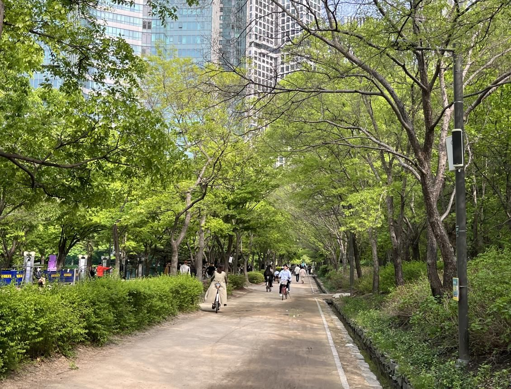
樹蔭底下，一位爸爸蹲著替孩子綁鞋帶，兩個女孩正在追泡泡。一位年輕人躺在草地上，帽子蓋住眼睛，不知道是在睡覺，還是在聽音樂，旁邊放著一杯咖啡，還有一本翻到一半的小說。沒有任何人催促他。
旅行常常喜歡追求「特別」。可是生活真正珍貴的，一直都是普通——普通到可以坐一個上午，普通到不知道時間過了多久，普通到離開時，會想著，下次還想再來。
沿著步道慢慢走，樹影一格一格落在地上。有一隻小狗跑過去，主人笑著叫牠回來。遠方有人吹著薩克斯風，不是表演，只是自己練習，音樂飄得很遠，又很輕。整座公園，好像都放慢了呼吸。
經過一座小橋，橋下沒有很多水，幾隻鴨子慢慢游過。孩子趴在欄杆上看，媽媽沒有催，只是陪著一起站著。五分鐘，十分鐘，二十分鐘，沒有誰覺得浪費時間。
我開始理解，為什麼很多人喜歡首爾。不是因為它一直很熱鬧，而是因為，它知道什麼時候應該安靜。
一座願意留很多公園給居民的城市，通常也願意留很多空間，給生活。
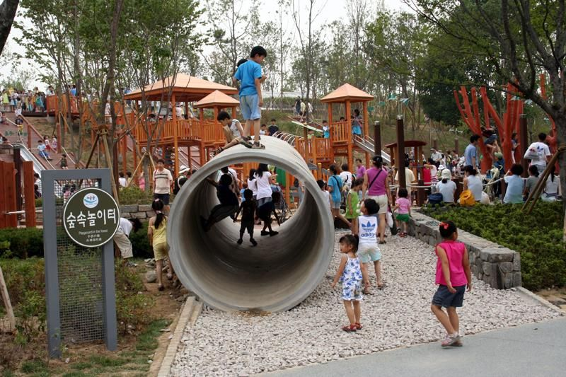
走累了，找一張長椅坐下。今天沒有行程，只有風。陽光從樹葉的縫隙落下來，照在鞋尖，照在長椅，照在一本還沒翻完的書。
你忽然發現，今天幾乎沒有拿出手機。不是刻意，只是忘了。
旅行有時候最大的收穫，不是去了很多地方，而是終於有一個上午，什麼都不用完成。
離開首爾林，不用急著回地鐵站，往聖水洞慢慢走。不用十分鐘，城市會悄悄換一張臉：樹木變成紅磚，草地變成倉庫，公園變成咖啡館。可是奇怪的是，節奏依然沒有變。
翻過下一頁，沒有離開，只是走過一條馬路。
一座曾經的工廠區，正在用另一種方式，繼續生活。下一站，聖水洞。
第十七章聖水洞，一座城市不一定要拆掉昨天
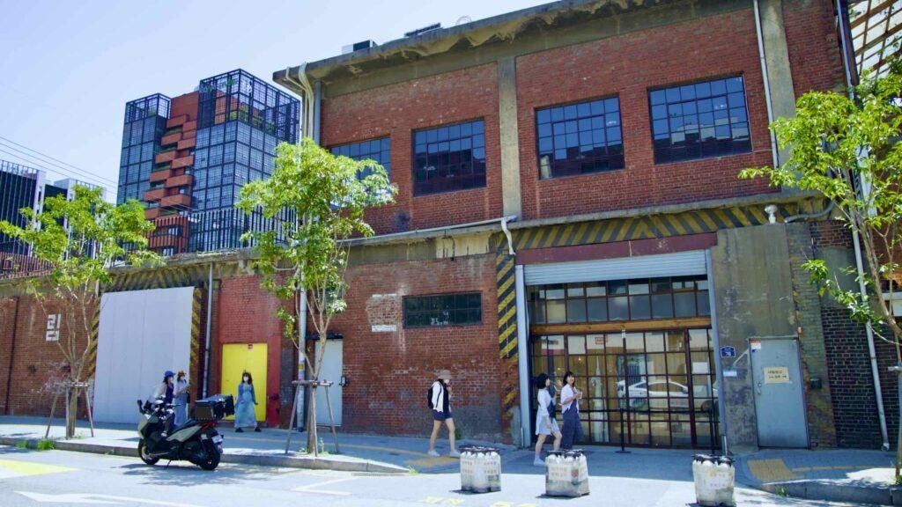
第一次來聖水的人，通常會說：「這裡很好拍。」可是如果只剩下照片，那就太可惜了。
聖水，不是為了拍照而存在，它只是剛好長成現在的樣子。
很多年前，這裡不是咖啡館，也不是設計品牌聚集的地方。這裡有工廠，有鞋廠，有印刷店，有機械維修行。
每天早上，卡車一輛接著一輛開進巷子，空氣裡不是咖啡香，而是鐵屑、皮革和機油的味道。
城市會老，建築也會老。很多地方選擇拆掉，重新蓋一棟新的。聖水沒有，它只是把昨天留下來，再慢慢放進今天。
走在街上，紅磚牆沒有重新粉刷，水泥地還留著歲月磨出的痕跡。有些鐵窗已經生鏽，有些招牌甚至微微褪色。可是沒有人急著把它們變新，因為時間，本來就是建築的一部分。
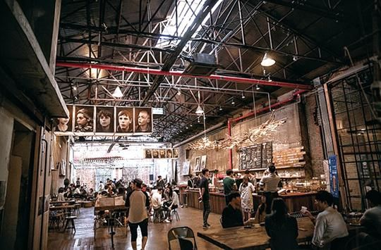
推開一扇厚重的鐵門，裡面是一間咖啡館。天花板很高，水泥柱沒有刻意包起來，以前吊掛機具的鋼梁，還留在原來的位置。
有人在角落畫設計圖，有人開著筆電開會，有人只是安靜喝咖啡。如果不是知道歷史，很難想像，這裡曾經是一座工廠。
首爾沒有把過去藏起來，它只是換了一種方式繼續使用。我很喜歡這種城市，因為它承認自己的昨天，也相信自己的明天。
走出咖啡館，巷口有一家修鞋店，旁邊，是一家販售香氛的小店，再往前，是一間手工皮件工作室。新和舊，沒有刻意分開，它們只是一起生活。
一位老先生坐在修鞋店門口，戴著老花眼鏡，仔細縫著鞋底；隔壁玻璃窗內，一群年輕設計師正在討論新的品牌包裝。兩個世界，隔著一面牆，卻沒有任何衝突。
旅行時，我們很容易追求新的東西——新的景點，新的餐廳，新的體驗。可是聖水提醒了一件事：新的，不一定比舊的好。真正好的城市，知道什麼該留下。
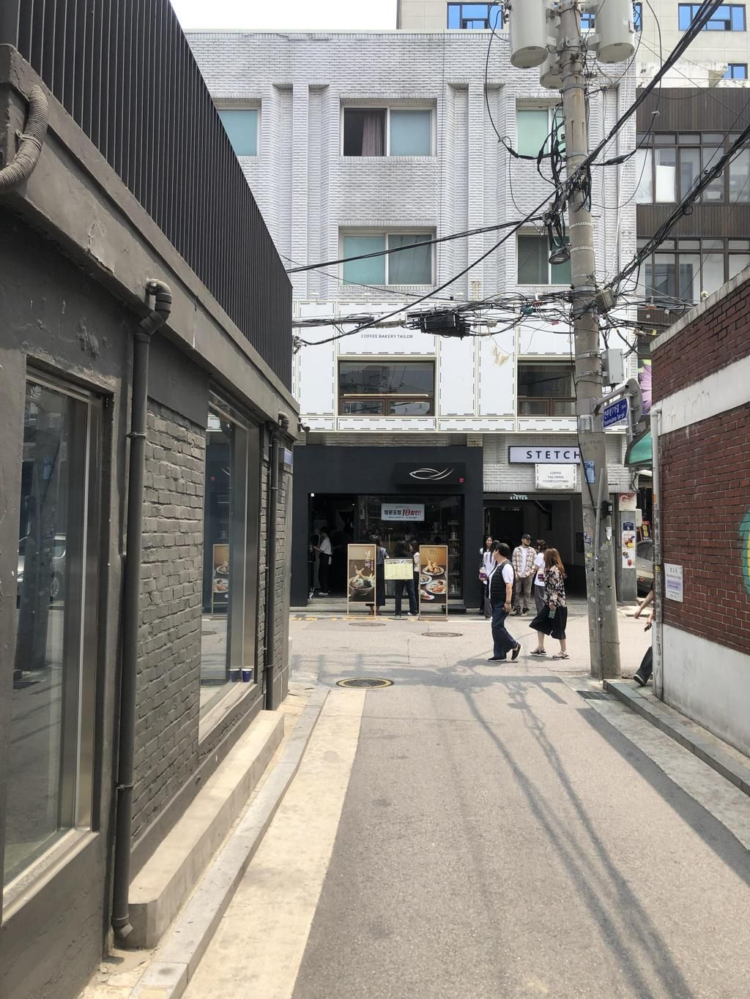
下午四點，陽光照在紅磚牆上，牆面的顏色變得溫暖。一位攝影師蹲下來調整鏡頭，旁邊經過一位送貨的大叔，沒有停下，也沒有躲開，只是自然地走進畫面。照片忽然變得更好，因為真正的城市，本來就有人生活。
很多人來聖水，會一直逛店，一直買東西。可是最值得做的事情，其實是找一張長椅，坐十分鐘，看看經過的人。
有人抱著花，有人提著剛買好的麵包，有人推著嬰兒車，也有人穿著工作服，準備下班。
原來，設計，不只是商品；生活本身，就是一種設計。
離開之前，回頭看了一眼那棟紅磚建築，忽然想到：旅行和城市，好像很像，都不是一直往前，而是帶著過去，慢慢走向下一段。
翻過下一頁，傍晚的陽光開始變得柔和。
今天，不回弘大，搭上一班地鐵，去漢江。不是為了夜景，只是想和這座城市，一起坐到天黑。
第十八章漢江，原來城市也需要喘口氣
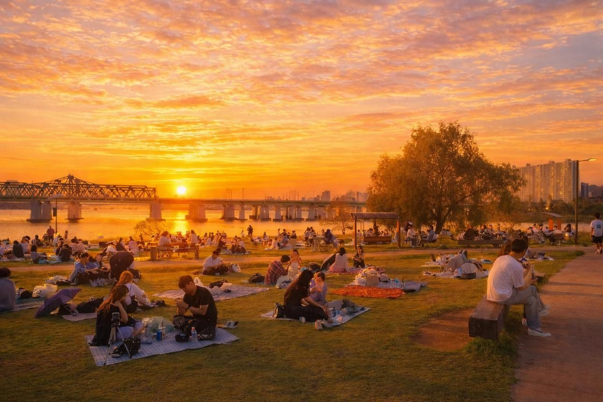
如果把首爾比喻成一個人，白天的它，很努力。
早上八點，趕著搭地鐵；中午十二點，匆匆吃完午餐；下午三點，會議還沒有結束；晚上六點，下班的人潮一起湧上街道。一整天，它都沒有停下來。
直到來到漢江，它才終於坐下。
從地鐵站走到河邊，大概十分鐘。越靠近河，風就越明顯，夏天的熱氣，被風吹散了一點。
遠遠就能看見草地。有人已經鋪好野餐墊，有人還提著剛買好的炸雞，慢慢往河邊走。沒有誰催促，因為今天最重要的事情，就是沒有事情。
第一次來漢江的人，常常站著看：看橋，看河，看夜景，十分鐘後，就離開。
其實，漢江不是站著看的地方，它是坐著待的地方。
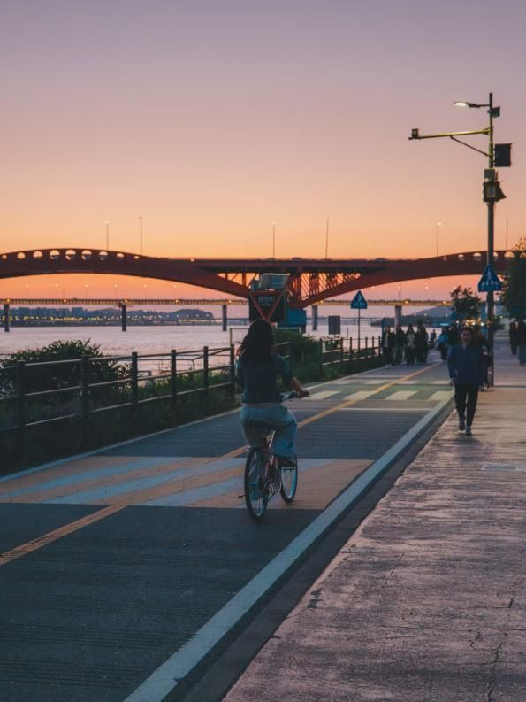
找一塊草地，坐下來，不用急著聊天，也不用急著拍照。把鞋子脫掉，讓腳踩在草地上。河風吹過來，帶著一點水氣，也帶著青草剛被太陽曬過的味道。城市忽然安靜了。
旁邊的一家人開始吃晚餐。爸爸打開炸雞盒，媽媽把飲料一杯一杯遞給孩子，孩子等不及，偷偷先拿了一塊雞腿，媽媽假裝沒看見，爸爸笑了一下，沒有責備，只是把濕紙巾遞過去。
這樣的畫面，每天都在發生，可是每一次看見，都還是會讓人微笑。
再遠一點，幾個大學生圍成一圈，有人彈吉他，有人跟著唱。歌聲沒有很大，風吹過去，很快就散開了。沒有舞台，沒有觀眾，只有一個普通的夏天晚上。
河面開始變成金色，夕陽慢慢落下，橋上的車，一台一台經過，遠方的高樓開始亮燈。一切都很慢，慢到你開始忘記時間。
旅行有時候最大的奢侈，不是住很好的飯店，不是吃很貴的餐廳，而是願意浪費一個晚上，什麼都不做，只是坐著——看天空從藍色變成深藍，看第一顆星慢慢出現，看城市把白天收起來。
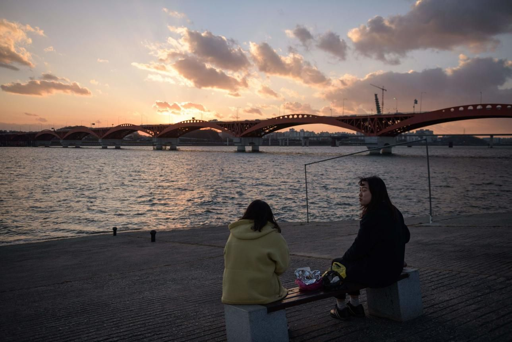
有人開始慢跑，有人騎著腳踏車經過，輪胎壓過步道，發出規律的聲音。一位老人牽著一隻白色的狗，走得很慢，狗偶爾停下來聞聞草地，老人也沒有催，只是陪著一起停下。
忽然覺得，真正的陪伴，大概就是這樣：不是一直往前，而是願意一起停下。
夜色完全降臨，便利商店前排起小小的隊伍。有人買泡麵，有人買啤酒，有人買冰淇淋。店員熟練地把熱水倒進泡麵碗裡，幾分鐘後，大家端著熱騰騰的泡麵，回到河邊。風有一點涼，泡麵的熱氣慢慢飄散。
這畫面，你可能在很多韓劇裡看過。可是親眼看見時，才知道它一點也不浪漫，它只是很生活。而生活，往往比浪漫更讓人想念。
坐到九點，不需要等煙火，也不用等什麼特別的表演。今天最好的風景，早就已經出現了：是一家人吃飯，是一群朋友聊天，是一對老人散步，是一位下班的人，一個人坐著吹風。
漢江從來沒有刻意安排驚喜，它只是每天晚上，安安靜靜地接住這座城市。
起身離開時，草地還留著一點溫度。回頭看了一眼，有人剛來，有人準備離開，河水依然慢慢流著。
你忽然明白：原來一座城市，也需要一個地方，讓所有疲倦的人，都能暫時放下今天。
翻過下一頁，第四天的早晨。
你不再需要地圖，也不再急著查攻略。因為首爾，已經開始有一點像家了。
第十九章第四天，原來我已經不用看地圖了
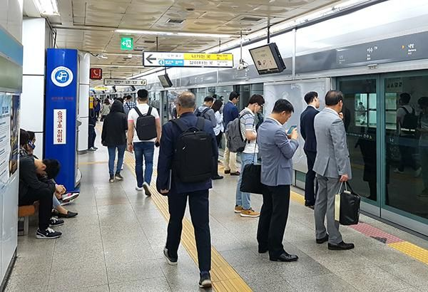
第四天早上，我出門的時候，手機沒有拿在手上。不是忘了，而是不需要。
前三天，每走一個路口，就會低頭一次，確認方向，確認出口，確認是不是走錯。明明只是短短幾百公尺，卻一直害怕迷路。
今天，走出飯店，左轉，過第一個路口，再右轉，便利商店就在前面。腳，比眼睛更早知道方向。
旅行有一個很奇妙的時刻。不是第一次看見首爾塔，不是第一次看見漢江，而是有一天，你忽然發現，自己不用導航了。
這件事情很小，小到幾乎不值得記錄。可是它代表了一件更重要的事：陌生，開始變成熟悉。
便利商店的店員，今天依然站在同一個位置。看見你進門，沒有特別說什麼，只是點了一下頭，你也自然地點頭。昨天還是客人，今天，好像比較像附近居民。
拿了一瓶玉米鬚茶，又順手拿了一個飯糰，結帳，刷卡，推開門。整個過程不到一分鐘，卻忽然有一種生活感。
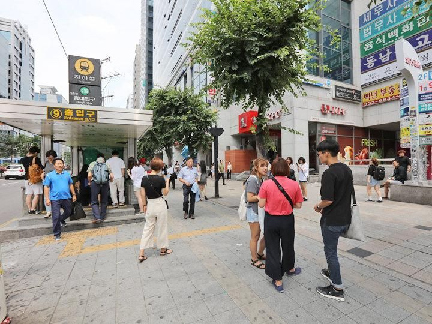
旅行真正讓人開心的，不是每天都有新的事情，而是開始有重複的事情。
每天都經過的斑馬線，每天都會聞到的麵包香，每天都會看見的流浪貓，每天都會走進去的便利商店。那些重複，慢慢把一座陌生城市，變成可以生活的地方。
我開始留意那些以前沒有注意的事情：哪一家咖啡館，早上九點以前陽光最好；哪一家餐廳，中午十二點半一定客滿；哪一班地鐵，永遠比下一班空一點；哪一條巷子，下雨的時候最漂亮。
旅行到了第四天，景點反而開始退到背景，生活，慢慢走到前面。
以前總覺得，旅行是去看新的東西。現在才發現，旅行真正有趣的，是一直看同一個地方，每天都不一樣。
昨天晚上經過的花店，今天門口換了一束新的向日葵；昨天睡在屋簷下的橘貓，今天跑到隔壁機車座墊上曬太陽；昨天那位總是坐在窗邊看書的女孩，今天的位置空著，換成一位白髮老人。
城市一直都在改變，只是改變得很慢，慢到只有停留下來的人，才會發現。
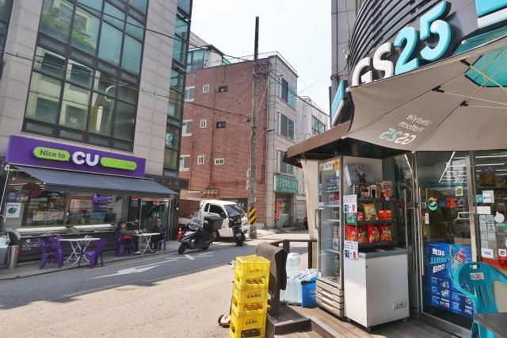
有一次，我坐在弘大街角，喝著咖啡，看著人群，忽然發現，我已經不再一直拍照，甚至，手機一直放在口袋裡。
不是因為沒有風景，而是因為，我開始相信：有些畫面，不用拍，也會一直留在心裡。
旅行到了第四天，心裡開始出現一個奇怪的念頭——如果今天不用回去，好像也很好。
不是因為首爾比較完美，而是因為，你終於找到了一種，不用一直趕路的生活。
翻過下一頁，今天，不去新的地方。
回去——回去那間咖啡館，回去那條巷子，回去昨天坐過的河邊。因為有些地方，第二次去，比第一次更美。
第二十章有些地方，要去第二次
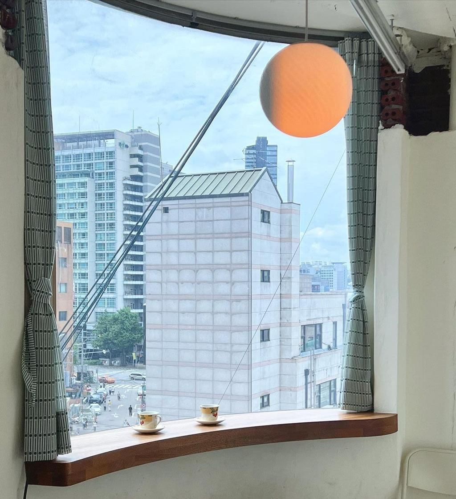
旅行有一個習慣：一直往前。今天去新的地方，明天去新的地方，後天，再去新的地方，好像只有一直增加目的地，旅行才算值得。
可是第四天，我沒有這樣做。我回到第一天那間咖啡館。
推開門，風鈴還是輕輕響了一下。吧檯還是同一位咖啡師，窗邊的位置，今天依然空著，好像有人一直替我留著。
他抬起頭，看了我一眼，笑了一下，沒有問我要喝什麼，只是說：「Ice Americano？」我也笑了，點點頭。
原來，一個人被記住，不用很久。那一刻，我突然明白：旅行最珍貴的，不是一直遇見新的地方，而是開始有地方，記得你的樣子。
咖啡送上來，還是昨天那個杯子，還是同樣的冰塊，還是同樣的位置。可是今天喝起來，完全不一樣。昨天，我是客人；今天，我比較像熟客。世界沒有改變，只是關係改變了。
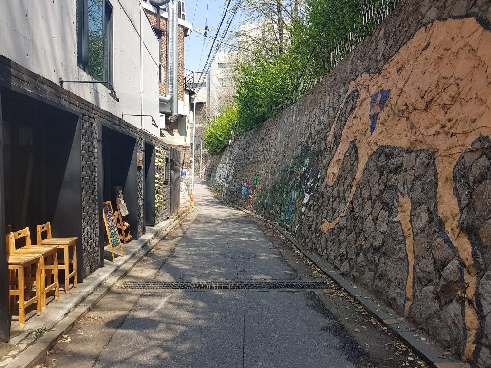
喝完咖啡，沒有立刻離開，只是站在門口，看著昨天走過的那條街。
昨天沒有注意到，咖啡館旁邊有一棵很大的銀杏樹；昨天沒有注意到，對面二樓是一間陶藝教室；昨天沒有注意到，每天早上九點，附近的花店都會把花搬到門口。
原來，不是城市沒有細節，只是第一天的自己，太忙了。
離開咖啡館，又走回昨天那條巷子。昨天，我一直低頭看地圖；今天，我開始抬頭。
一位阿姨正在擦窗戶，窗框上放著三盆植物；一隻黑白相間的貓，睡在昨天那家麵包店門口；一位送貨員停下機車，把牛奶搬進便利商店。
全部都是昨天發生過的事情，只是昨天沒有看見。旅行真正改變的，不是城市，是眼睛。
下午，我沒有去新的景點，只是又回到漢江。同一片草地，同一條河，今天坐的位置，離昨天不到十公尺。
可是風向不同，天空不同，身邊的人也不同。昨天，是一家人在野餐；今天，是一位老人拿著一本書，慢慢翻，翻很久，一頁，一頁。沒有人催他，河也沒有催。
我一直覺得，真正值得再去一次的地方，一定不是因為它很漂亮，而是因為，它每天都不一樣。
很多人問我：「首爾去了這麼多次，不會膩嗎？」我總是不知道怎麼回答。因為我去的，好像不是同一座首爾。
春天，樹是新的；夏天，河風是新的；秋天，銀杏是新的；冬天，雪是新的。甚至，昨天和今天，也不一樣。
一座城市真正迷人的地方，不是它一直改變，而是它一直生活。
旅行最後留下來的，不是「我去過」，而是：「我回去過。」
翻過下一頁，第五天到了。
今天沒有新的景點，只有一件事情：慢慢告別。
第二十一章第五天，不要急著去機場
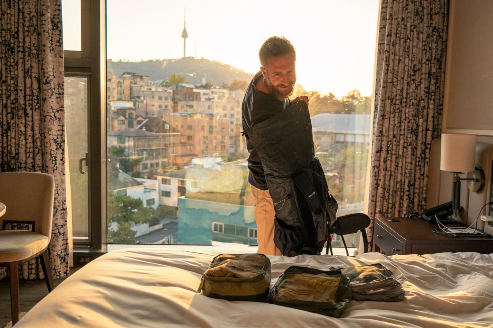
旅行最後一天，大家起床都很安靜。沒有第一天那種興奮，也沒有昨天那樣悠閒。房間裡，只剩下行李箱拉鍊的聲音。
昨天買的餅乾，放進行李；昨天買的明信片，夾進書裡。充電器、護照、耳機，一樣一樣確認。
其實沒有什麼東西忘記，只是心裡一直覺得，好像還有什麼沒有帶走。
拉開窗簾，昨天看見的那棟公寓還在，昨天經過的咖啡館，也已經開始營業。一切都和昨天一樣，只有今天，你要離開。
很多人最後一天，都會把時間抓得很緊：退房，直奔機場，免稅店，登機。可是我一直覺得，旅行最後一天，最不應該趕。
把行李寄放在飯店，不要立刻離開，再出去走一次。不用很遠，就住宿附近。
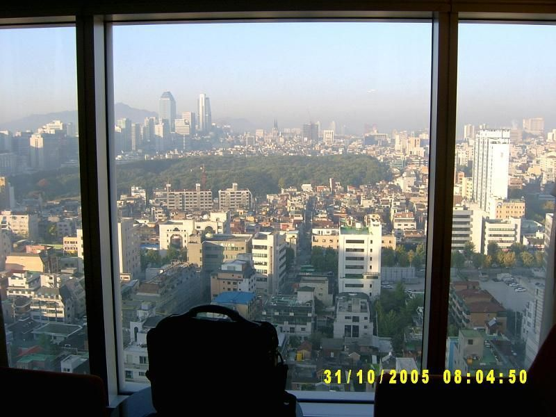
昨天早上買咖啡的那一家店，今天還是一樣。咖啡師低著頭磨豆，店裡放著同一種音樂。靠窗的位置，坐著另一位陌生人。昨天的位置，今天屬於別人。
忽然覺得很合理。城市本來就一直流動，沒有任何位置，永遠屬於誰。
走到便利商店，今天沒有想買東西，還是推開門。冷氣迎面吹來，店員還是昨天那一位，他熟練地替客人結帳，沒有注意到你，你也沒有打擾他。
只是慢慢走了一圈，看看昨天買過的玉米鬚茶，看看一直想帶回家的零食。最後，什麼都沒有買。有些地方，不是一定要消費，只是想再看一眼。
離開便利商店，經過那家麵包店，今天第一盤可頌剛出爐，奶油香味飄到街上。你忽然想起，第一天也是這個味道。只是第一天，什麼都很陌生；今天，一切都很熟悉。
旅行就是這樣。真正改變的，從來不是街道，而是自己。
坐在昨天那張長椅，今天沒有拿咖啡，只是坐著，看著人來人往。一位媽媽牽著孩子去上學，昨天看見的老先生，今天還是坐在同一個位置看報紙，一隻橘貓從巷子裡走出來，又慢慢消失。
首爾沒有因為你的最後一天，安排任何特別的劇情，它只是照常生活。忽然覺得，這樣很好。
真正喜歡一座城市，不是因為它在你離開時，給你一場盛大的告別，而是因為，即使你離開了，它還是繼續好好生活。
回到飯店，大廳還是昨天的大廳。櫃檯的人接過房卡，微笑著說：「Have a safe flight.」你回答：「Thank you.」
和第一天入住時相比，只是多了兩句話，可是心情，完全不一樣。
拉起行李箱，輪子滑過大廳光滑的地板，自動門打開，風吹進來。你沒有立刻叫車，回頭看了一眼。不是看飯店，而是看這幾天每天都會經過的大門。
很多地方，第一次走進去，沒有感覺；最後一次走出去，才開始捨不得。
翻過下一頁，接下來，不是首爾，也不是旅行，而是每一次離開都一定會經過的地方——機場，也是每一段旅程，最安靜的結尾。
第二十二章回程的列車，原來離開也是旅行的一部分
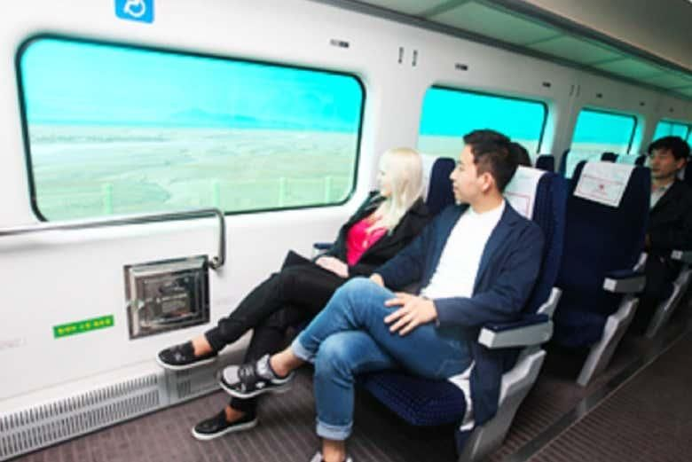
回機場的路，和來的時候，是同一條。可是，完全不是同一趟旅行。
第一天，坐上這班列車，眼睛一直看著窗外。每一站都很新鮮，每一棟建築，都不知道名字。手機裡開著地圖，一直確認：還有幾站？是不是快到了？
今天，手機沒有打開。窗外那些曾經陌生的地方，開始有了名字——弘大，孔德，首爾站。數著數著，忽然發現，原來自己真的住過這座城市幾天。
列車慢慢離開市區，高樓開始變少，住宅開始變多，然後，河流，濕地，最後，看見機場。
來的時候，這些風景只是背景；回去的時候，每一段都像告別。
我一直很喜歡回程的列車。不是因為舒服，而是因為，它不需要做任何事情。你不能再排行程，不能再趕景點，不能再查餐廳。旅行忽然安靜下來，像一本書，慢慢翻到最後幾頁。
旁邊坐著一對母女，小女孩抱著一隻剛買的娃娃，一路上沒有放開，媽媽靠著椅背，閉著眼休息。前面的座位，一位年輕人一直整理照片，一張一張刪，一張一張留下。
旅行到了最後，大家都開始整理回憶：有人整理照片，有人整理行李，有人整理心情。我沒有整理，只是一直看著窗外。
忽然想起第一天的自己，一直害怕走錯出口，一直擔心語言不通，一直怕迷路。現在回頭看，那些擔心，好像都沒有真正發生。
旅行教會人的，常常不是勇敢，而是相信。相信陌生沒有那麼可怕，相信迷路沒有那麼糟，相信很多事情，走著走著，就會找到答案。
列車廣播響起：Incheon International Airport。有人開始站起來，有人把行李從架上拿下來，有人還捨不得結束手上的小說。
我坐著沒有動，直到大部分的人都下車了，才慢慢站起來。不是因為行李很重，只是想讓這趟旅程，再慢一點。
走出月台，熟悉的機場又出現在眼前。四天前，我站在這裡，心裡裝滿期待；今天，我站在同一個地方，心裡裝滿回憶。
地方沒有變，只是來的人，已經不是同一個人。
翻過下一頁，沒有新的城市，沒有新的景點，只有一個很普通的地方，卻也是每一趟旅行，最難說再見的地方——登機門。
第二十三章登機門前，最後一杯咖啡
每一趟旅行，都有最後一杯咖啡。
它通常不好喝，比不上弘大的咖啡館，比不上聖水那間老工廠改建的小店，甚至比不上住宿樓下，每天早上都會去的那一家。可是不知道為什麼，還是會買。
坐在登機門前，飛機停在窗外，地勤人員推著行李車來來回回。有人拖著登機箱一路小跑，有人靠著椅背睡著了，有人已經開始免稅店最後一輪購物。每一個人，都準備離開。
我沒有滑手機，只是一直看著玻璃外面的飛機。
四天前，也是透過同一片玻璃，看著另一架飛機。那時候，心裡裝滿的是期待；今天，裝滿的是安靜。
旅行很少在離開那一天結束。真正結束，通常是在這個等待登機的空檔——所有事情都完成了，沒有下一個景點，沒有下一家餐廳，沒有下一班地鐵，剩下的，只有回想。
我開始一件一件想起。第一天下午，弘大街頭，那杯冰美式；第二天，景福宮早晨的陽光；第三天，漢江吹過來的風；第四天，那家餐廳老闆娘遞來的泡菜。
這些畫面，沒有按照時間排列，而是像拼圖一樣，慢慢拼成一趟旅行。
旅行真正留下來的，從來不是每天去了哪裡，而是那些沒有預料到的瞬間：那隻睡在麵包店門口的橘貓，那位每天早上都坐在窗邊看書的女孩，那個一直沒有記住名字的咖啡師，那位在地鐵裡，把座位讓給老人的高中生。
沒有一件事情，寫進攻略。可是它們，一起變成了首爾。
廣播響起，開始登機。大家慢慢排隊，沒有人說話，只有行李輪子滑過地板，發出規律的聲音。
走過空橋，我忽然回頭。不是因為忘了什麼，只是想再看一次那片天空。天空很普通，沒有夕陽，沒有彩虹，甚至有一點陰。可是，它是首爾最後一片天空。
我忽然想起，第一天抵達時，自己也是站在這裡。那時候，一切都很陌生；現在，連空橋的味道，都開始熟悉了。
坐回座位，繫好安全帶，飛機慢慢滑向跑道，窗外的航廈，越來越遠。
忽然發現，旅行裡最困難的，不是離開，而是接受：這座城市，明天依然會照常生活。
弘大的咖啡館，明天還會開門；漢江的風吹到傍晚，依然會有人坐在草地；景福宮的陽光，依然會落在六百年的屋瓦上。只是，明天站在那裡的人，不再是你。
飛機開始加速，輪胎離開地面，首爾慢慢變小，漢江又變成一條細細的線。那些每天經過的街道，再一次，變成了地圖。
可是這一次，它們不再只是地圖，而是記憶。
翻過下一頁，飛機已經離開首爾，但故事還沒有結束。
因為真正的旅行，從來不是改變了一座城市，而是悄悄改變了，你回家以後的生活。
終章回家以後，旅行真正開始的地方
旅行結束之後，生活恢復得很快，快得有一點殘忍。
星期一，鬧鐘還是七點，早餐還是一樣，捷運還是一樣擁擠，信箱裡還是塞滿沒有看完的郵件。桌上的工作，沒有因為你去了首爾五天，就少一點。世界沒有等你，它只是繼續往前。
只有行李箱，還放在房間角落，沒有打開，也沒有收起來。它安安靜靜站在那裡，像是在提醒你：前幾天，真的離開過。
洗衣服的時候，從外套口袋裡掉出一張發票。是一家咖啡館，日期，是第三天。金額不多，只有一杯冰美式。可是拿起來的那一瞬間，你忽然聞到咖啡的味道。不是現在，是那天下午。
旅行的記憶，很奇怪，它不會按照時間回來。
有一天，經過一家麵包店，奶油剛出爐的味道飄出來，你忽然想到弘大。不是因為麵包一樣，而是因為，那個早晨，也是這個味道。
下雨的時候，你沒有立刻跑，只是慢慢把傘打開，忽然想到首爾，想到那天下午，大家只是安靜地走著，沒有人抱怨。雨，只是生活的一部分。
有一天加班到很晚，下班時，你沒有直接回家，而是去便利商店買了一瓶飲料，坐在外面的椅子，喝了十分鐘。你忽然笑了一下，因為以前的自己，從來不會這樣。
旅行沒有改變城市，它只是改變了一些很小很小的習慣：開始願意慢慢喝一杯咖啡，開始願意走路回家，開始願意在公園坐十分鐘，開始願意看夕陽，開始願意，把手機放回口袋。
很多人問：旅行到底有什麼意義？以前，我會回答：看世界。現在，我比較想說：旅行讓你知道，生活，其實可以有很多種速度。
首爾沒有教我新的事情，它只是提醒我：原來日子，不一定要一直趕；原來咖啡，可以喝一個下午；原來散步，不需要目的地；原來有些風景，不是用相機留下來，而是用生活。
後來，我把那張交通卡放進抽屜，沒有丟，也沒有帶在身上。它一直躺在那裡，偶爾整理房間時，會再看見它。
每一次拿起來，都不是想到地鐵，而是想到那個每天走同一條路去買咖啡的早晨，想到漢江的風，想到北村午後的安靜，想到便利商店門口的燈，想到那座沒有急著歡迎你，也沒有刻意挽留你的城市。
旅行真正留下來的，從來不是紀念品，是一種新的生活方式。
有一天，你會再去首爾，也可能不會。其實沒有關係。因為真正回來的，不是身體，而是那些已經留在生活裡的小小改變。
也許，多年後，你會帶著另一個人去。也許是朋友，是伴侶，是孩子。
你會站在漢江邊，對他說：「這裡晚上不用急。」你會帶他走進那條沒有名字的巷子，告訴他：「不用看地圖。」你會在景福宮早上八點半抵達，然後笑著說：「現在的景福宮，才是最好看的。」
那時候，你才會發現：原來旅行真正留下來的，不只是回憶，而是你開始把那些溫柔，分享給別人。
作者後記
有人以為，這本書是在介紹首爾。其實不是。它只是借了一座城市，寫一種生活。
首爾可以換成東京，可以換成京都，可以換成巴黎，也可以換成你每天生活的城市。因為真正需要放慢腳步的，從來不是旅行，而是我們自己。
如果有一天，你合上這本書，沒有立刻開始查首爾的機票，而是決定今天下班後，不搭車，慢慢走回家——那麼，這本書，就完成了它的旅行。